나흘 치입니다. 이번엔 게임 바깥 일이 많았습니다. 포스터를 만들었고, 줄거리를 한 번 엎었고, 적이 맞고 쓰러지는 모션을 직접 만들어 넣었습니다. NPC 넣는 도구와 방송도 조금씩 굴러갔고요.
포스터는 그림을 그리지 않고 게임 안에서 찍었습니다. 배우와 소품을 무대에 세우고, 인물과 배경과 소품을 층으로 나눠 각각 투명 배경으로 찍은 다음, 종이 질감 위에 층마다 색보정을 달리해서 한 장으로 겹칩니다. 이걸 하려고 포스터용 셰이더를 13개 만들었습니다. 종이결, 보케, 붓자국, 유리 파편, 나선, 벽, 밤거리, 바다, 우주 같은 것들이요. 구도는 스무 가지를 잡아봤습니다. 품에 안은 둘, 거대한 실루엣, 만화 칸 격자, 나란히 걷는 패거리, 노을 속 갈매기 떼, 과녁까지.
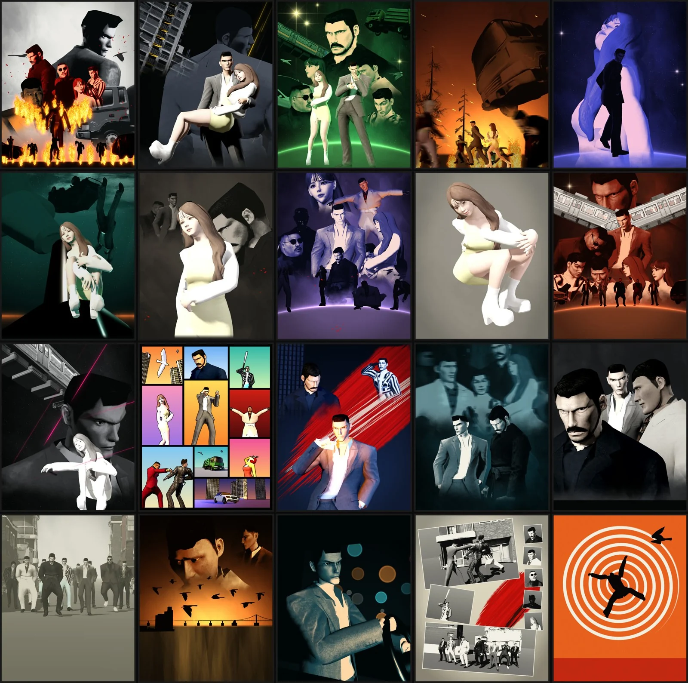
스무 구도를 한 장에 모았습니다. 아직 고르지 않았습니다.
그중 하나를 크게 뽑으면 이렇습니다. 어느 걸로 갈지는 아직 정하지 않았고, 글자도 안 얹었습니다.
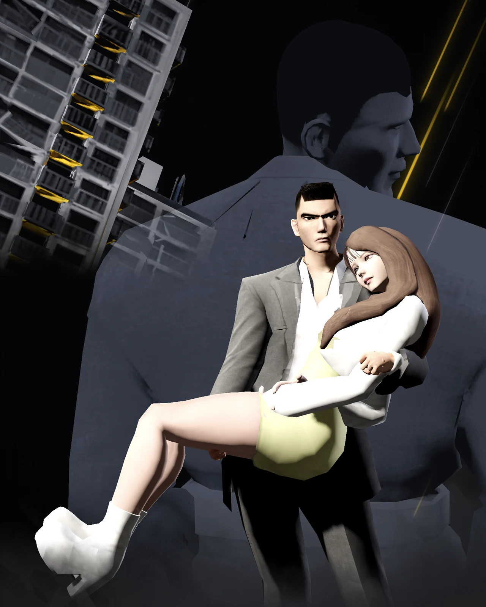
후보 중 하나입니다.
줄거리 얘기도 해야겠습니다. 지난 글에서 정본을 0.3판으로 올렸다고 했는데, 그 뒤 이틀 동안 두 번 더 고쳤습니다. 방식은 이랬습니다. 줄거리의 빈칸 15개를 적어두고, 명작 마흔 편을 한 편씩 옆에 놓고 비교하면서 빈칸을 하나씩 메우는 식이었어요. 구조 검사에서 걸리던 항목이 32개에서 0개가 됐으니 숫자로는 완성이었습니다. 그런데 읽어 보니 재미가 없었습니다. 장치는 잔뜩 쌓였는데, 세 줄로 말해서 "그게 뭔데?" 소리가 나오는 훅이 없었어요. 어느새 가족 드라마 쪽으로 흘러가 있기도 했고요. 그래서 0.5판은 뼈대부터 다시 썼습니다. 하드보일드 쪽으로요. 남자들의 광기와 기싸움, 추한 본질이 먼저 보이고, 컷신은 암시가 아니라 인상, 활약, 적의 당위, 충격 중 하나를 맡아야만 넣습니다. 배운 건 하나입니다. 줄거리는 세 줄만 봐도 재밌어 보여야 하고, 구체적인 이름과 장소와 돈 액수로 말해야 읽는 사람이 그림을 그린다는 것. 줄거리 자체는 여전히 아껴둡니다.
대본 파이프라인의 첫 시험 장면도 돌렸습니다. 골목에서 상납 안 올린 양아치한테 돈 받으러 가는 장면이에요. 원고를 쓰면 대본이 나오고, 카메라는 지난번에 만든 대화 감독이 서열에 맞춰 알아서 잡고, 배우 이동이나 담배, 주먹 같은 동작만 대사 줄 번호에 매답니다. 선택지가 두 번 나옵니다. 연기를 얼굴에 뿜을지, 옆에 선 똘마니를 집에 보낼지, 사흘 줄지. 그다음엔 가오로 꺾을지, 주먹으로 끝낼지, 있는 것만 털어 갈지. 같은 장면을 예전 방식대로 샷 블록 84개를 손으로 잡아서도 만들어 봤는데, 대본 쪽이 고치기가 훨씬 쉽습니다.
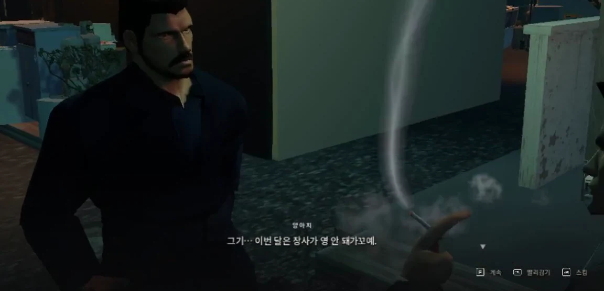
담배에 불을 붙이고 핑계를 듣는 중입니다. 이 다음이 첫 선택지입니다.
처음 판은 샷마다 손떨림을 얹고 컷 사이를 0.2~1초씩 보간해서 넘겼는데, 보니까 긴장 구간도 아닌데 멀미가 났습니다. 흔들림은 빼고 컷은 0초로 자르는 걸 기본으로 바꿨습니다. 분기 경로 9개를 실제 키 입력으로 끝까지 돌리는 검사도 붙였습니다.
맞고 쓰러지는 쪽을 손봤습니다. 어퍼컷에 뜬 적은 그동안 머리 맞는 모션을 틀어놓고 몸통을 코드로 돌려 눕혔는데, 이제 뒤로 돌며 날아가는 스크류 모션을 직접 만들어 넣었습니다. 비행 시간도 모션 길이를 그대로 따릅니다. 땅에 닿으면 바닥에 처박혀 엎어지는 모션, 밀어내는 앞차기에 맞으면 돌면서 나가떨어지는 모션으로 이어집니다. 기상도 바꿨습니다. 전에는 쓰러진 몸을 물리로 일으켰는데, 등으로 떨어지면 구르고 엎드리기를 몇 번 반복해서 일어나는 데 7초 넘게 걸리기도 했어요. 이제 엎어졌으면 엎드린 기상, 누웠으면 누운 기상 모션을 틉니다. 각각 0.9초, 1.2초입니다. 모션이 바뀌는 자리마다 직전 자세에서 0.2초 섞어서 튀지 않게 했고요.
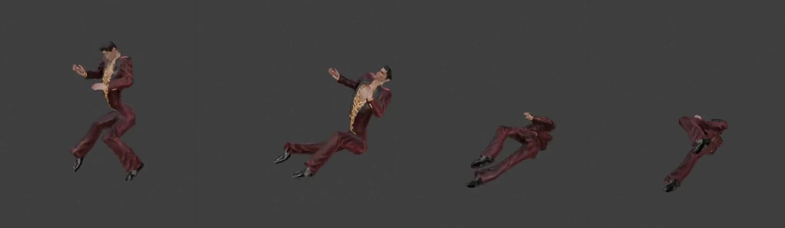
날아가서 처박히기까지. 만드는 중 화면입니다.
Blender 애드온에는 여러 뼈를 한꺼번에 옮기고 돌리는 기능을 넣었습니다. 전에는 한 번에 뼈 하나였거든요.
NPC 쪽은 여자 캐릭터 여섯의 어깨와 목을 고쳤습니다(fix(npc): 여자 NPC 어깨·목 이음새). 팔을 올리면 어깨 윗면이 팔을 따라 처지고, 고개를 돌리면 얼굴과 몸이 만나는 목 선이 V자로 찢어지던 겁니다. 어깨는 몸 메시를 고정하고 옷만 몸에 맞추고, 목은 이음선 6cm 안의 가중치를 얼굴과 몸 양쪽에 걸쳐 번지게 했습니다. 이음선 양쪽 법선이 최대 48도 달라서 생기던 선도 평균을 내서 없앴고요. 한 명은 속눈썹이 하얗게 나왔습니다. 지난주에 텍스처를 규격에 맞추면서 속눈썹 판을 얼굴 재질에 합쳤는데, 그 판은 흰 가닥을 '속눈썹 색', 검정을 '투명'으로 읽는 마스크였거든요. 마스크가 그대로 색으로 찍힌 거죠.
이런 건 숫자 검사로는 못 잡습니다. 그래서 「NPC 파일 → 게임」 버튼에 눈으로 보는 관문을 달았습니다. 캐릭터마다 같은 자세, 같은 카메라로 13장을 찍습니다. 대기, 걷기, 주먹, 발차기, 춤, 얼굴 근접, 목 이음선 근접, 고개 돌림, 팔 올림, 으쓱 같은 것들. 지난번에 승인한 사진과 픽셀로 비교해서 0.1% 넘게 달라진 게 하나라도 있으면 설치 전에 멈추고 보여줍니다. 원본 Blender 파일은 내보낼 때마다 로컬 git에 스냅숏을 남기고, 설치가 끝나면 어떤 원본에서 어떤 파생 파일이 나왔는지 해시로 장부에 적습니다. 속눈썹처럼 알파를 쓰는 부위는 원본에 선언해 두고, 선언 없는 알파가 있으면 내보내기가 멈춥니다.
실사 효과 영상을 게임에 넣는 길도 하나 열었습니다. 검은 배경으로 찍힌 연기, 불꽃, 물보라 영상 17개를 투명 처리해서, 프레임을 한 묶음 텍스처로 구운 다음 카드 한 장에 돌립니다. 카드는 밀도로 조명을 받고, 불꽃은 열기로 더합니다. 처음엔 15종을 만들었는데 보고 8개만 남겼습니다. 불꽃 분사 하나와 연기 둘, 먼지, 안개, 물 셋.
엑셀 방송에는 여캠 조명이 생겼습니다. 카메라에 붙어 다니는 링라이트와 턱 밑 반사판, 인물 뒤 좌우의 분홍과 라벤더 역광, 거기에 피부 덧칠과 화면 뷰티 필터를 따로 켜고 끕니다. 방 조명은 그대로 두고 인물만 비춥니다.
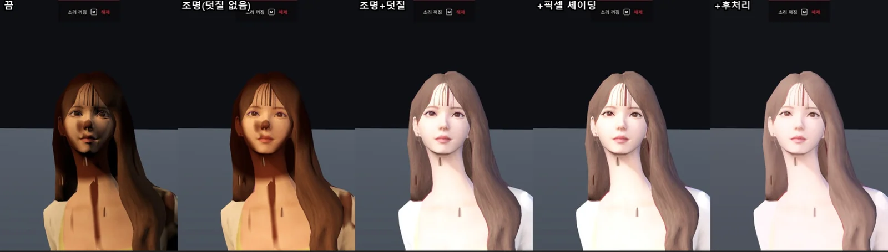
끄고 켜 가며 단계별로 찍은 겁니다. 오른쪽으로 갈수록 뽀샤시.
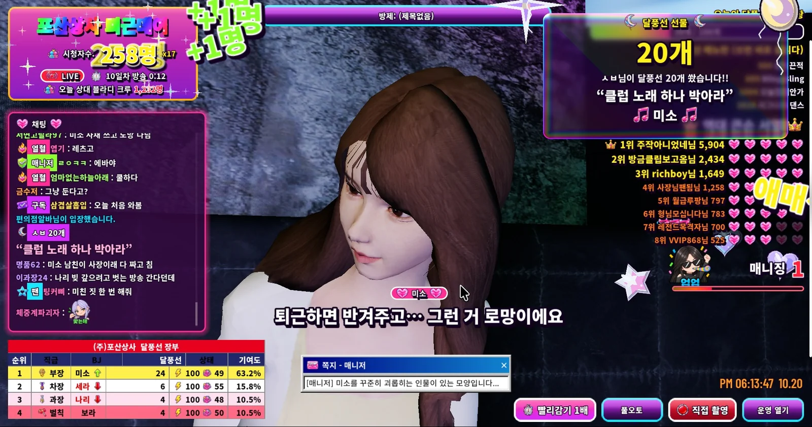
방송 화면에서는 이렇게 보입니다.
채팅은 실제 방송 채팅을 받아 수치를 재봤습니다. 글자 수 중앙값이 6자, 3자짜리가 24%, 상위 10%가 전체 채팅의 75%를 칩니다. 문구는 그대로 쓰지 않고 살짝 바꿔 넣습니다. 방송 중 재미를 깎던 것들도 걷어냈습니다. 화면에 안 보이는 숨은 악성은 폐기, 신고는 목록 줄 수인 3건까지만 대기, 간장 샤워 카드는 애들 기분이 바닥이면 '조퇴각'이라고 미리 적어줍니다.
자잘한 것으로는 캐릭터 조명에서 만화풍 명암 프리셋을 걷어내고 엔진 조명으로 통일했고, 설계 문서는 큰 것부터 카드 한 장과 세부 파일로 다시 묶었습니다.
- 포스터: 엔진 안 층별 촬영, 셰이더 13개, 구도 20가지 (미정) - 스토리 정본 0.5: 빈칸 15개 릴레이(검사 32 → 0) → 반려 → 하드보일드로 다시 씀, 세 줄 훅 원칙 - 컷신 쇼케이스 골목 수금: 원고 → 대본 → 자동 카메라, 선택지 2단, 경로 9개 검사, 흔들림 없는 0초 컷 - 전투: 스크류 비행, 착지, 앞차기 다운, 기상 두 가지 모션, 0.2초 블렌드, 피격·공격 클립 재게시 - Blender 애드온: 여러 뼈 동시 편집 - NPC: 어깨·목 이음새 6명, 속눈썹 알파, 게시 관문(캡처 13장, 원본 스냅숏, 설치 장부, 알파 선언) - 실사 영상 VFX 8종 - 방송: 여캠 조명, 채팅 수치, 숨은 악성 폐기·신고 3건·조퇴각 - 캐릭터 조명 통일, 문서 카드화
포스터는 아직 고르는 중입니다. 그럼 다음에 또...
카메라에게 보는 눈을 달아줬습니다
지난 글 끝에 넣어놓고 못 돌려본 것들을 한꺼번에 돌려보겠다고 했는데, 그건 아직 못 했습니다. 대신 이번 닷새는 카메라에 제일 많이 썼습니다. 그 사이에 전투 손맛, 점령전 마무리, 방송, NPC 외형 정리도 같이 굴러갔고요.
카메라 방식에 '시네마틱'을 하나 더 넣었습니다(feat(camera): 시네마틱 카메라 모드 — 연구 근거의 예술용 감독). 조작하기 편하라고 있는 카메라가 아니라, 영화처럼 컷을 나눠서 보여주는 감상용 카메라입니다. 구도와 컷 길이를 계산할 수 있는 규칙으로 만들고, 어떤 구도로 언제 찍을지를 적은 샷 카드 32장으로 정리했습니다. 카메라는 싸움의 박자를 읽습니다. 상대가 공격을 준비하는지, 휘두르는 중인지, 헛치고 거둬들이는 중인지를 보고 그 박자에 맞춰 컷을 넘깁니다. 봇에게 실제로 싸우게 하고 녹화해 보니, 전투 중 한 컷의 평균 길이가 1.3초에서 2.2초로 늘었습니다. 정신없이 바뀌던 게 좀 진정된 거죠.
그런데 처음 녹화한 40컷 중 15컷이 망했습니다. 바닥만 찍히거나, 렌즈 바로 앞 덤불이나 사람에 가리거나, 너무 멀리서 잡거나, 타격 이펙트에 얼굴이 덮였어요. 이유는 간단했습니다. 카메라가 사람이 어디 서 있는지만 재고, 실제로 화면에 뭐가 찍히는지는 안 보고 있었던 겁니다. 그래서 눈을 달아줬습니다. 화면을 5×5칸으로 나눠 광선을 쏴서 바닥만 보이는지, 렌즈 앞을 벽이 막는지, 뒤에 먼 배경이 있는지를 잽니다. 화면에 잡힌 사람도 전부 봅니다. 렌즈 앞에 남의 머리가 걸렸는지, 주인공보다 크게 잡힌 구경꾼이 있는지, 머리끼리 겹쳤는지 같은 것들이요. 빛도 봅니다. 해가 낮을 때만 역광 실루엣을 노리고, 밤에는 사람 머리 뒤에 조명이 있을수록 점수를 더 줍니다. 시네마틱으로 볼 때는 체력바 같은 화면 표시도 다 뺐습니다. 滅이나 수금 도장은 연출이라 남겨뒀고요.
되돌린 것도 있습니다. 두 사람을 같이 잡는 컷이 어지럽다고 해서, 카메라가 무겁게 천천히 따라가는 스테디캠 방식으로 바꿔봤습니다. 숫자로는 카메라가 도는 속도가 초당 75.8도에서 20.1도로 확 줄었어요. 그런데 막상 보니 박력이 다 죽어서 통째로 되돌렸습니다. 다시 보니 어지러운 원인은 도는 속도가 아니라, 좁은 화각에서 카메라가 위아래로 고개를 까딱이는 거였습니다. 이건 일단 불편한 채로 두기로 했습니다.
감독은 전투, 필드 이동, 대화 세 영역으로 나눴습니다. 한 영역을 고쳤는데 다른 영역 카메라가 몰래 바뀌면 안 되니까요. 그걸 확인하려고 입력을 테이프처럼 녹화해 뒀다가 다시 돌려보는 검사도 만들었습니다. 테이프 9개, 10,334프레임의 카메라 위치가 나누기 전과 후에 완전히 똑같았습니다.
대화 영역은 대사 장면을 찍습니다. 두 사람 대화는 정석대로 찍습니다. 처음엔 둘을 같이 잡고, 말하는 사람 쪽으로 넘어가고, 한 사람이 오래 말하면 듣는 사람 얼굴을 잡는 식이에요. 서열이 있는 장면이면 윗사람은 살짝 올려다보고 아랫사람은 내려다보게 각도를 기울입니다. 다만 올려 찍는다고 늘 세 보이는 건 아니라서, 서열을 적어둔 장면에만 씁니다. 각도 크기는 아직 임시값입니다.
이걸 하려고 대사도 자체 대본 형식(.gsc)으로 쓰게 바꿨습니다. 줄마다 고유 번호가 붙어서, 나중에 대사를 고치거나 번역해도 어느 줄이 어느 줄인지 놓치지 않습니다. 영어, 일본어, 중국어 번역에 쓸 용어집과 말투 지침도 같이 만들어뒀고요. 장면 쓰는 도구도 프로젝트 안으로 옮겨서, 원고를 쓰면 바로 게임 대본으로 뽑히게 했습니다. 스토리 정본 문서는 0.3판으로 올리면서 처음부터 끝까지 큰 줄기를 정했습니다. 줄거리는 아직 아껴두겠습니다. 참고로 지금 게임에 들어 있는 사흘짜리 이야기는 기능 시험용이라 실제 이야기와는 다릅니다.
평소 플레이 카메라도 손봤습니다. 벽을 등지고 싸우면 카메라가 내 머리 속으로 들어가서 바닥을 내려다보는 일이 있었는데, 시네마틱 감독의 그 '눈'을 베껴서 플레이 카메라에 붙였습니다. 같이 쓰지 않고 따로 복사한 건, 시네마틱 쪽을 고칠 때 플레이 카메라가 덩달아 바뀌지 않게 하려고요. 여럿에게 둘러싸이면 카메라는 몇 미터 밖에 있는데 주인공 머리만 사라지던 버그도 있었습니다. 이제 머리만 숨기는 건 1인칭으로 끝까지 당겼을 때뿐이고, 그 밖에는 카메라가 몸에 붙으면 몸 전체가 점점 비쳐 보입니다. 마우스 휠 한 칸에 2.5배씩 움직이던 것도 잡았습니다. 휠을 한 칸 굴리면 엔진이 '누름'과 '뗌'을 같이 보내는데 그걸 둘 다 세고 있었어요. 제일 멀리서 1인칭까지 2칸이면 가던 게 이제 9칸입니다.
전투 쪽에는 저스트 회피가 두 가지 들어갔습니다. 적이 공격을 시작하면 그 적의 눈이 번쩍합니다. 그 공격이 닿기 직전에 대쉬를 시작하면 저스트 대쉬인데, 나만 빼고 세상이 최대 4초 동안 느려집니다. 회피 키로 0.15초 안에 막으면 저스트 블락입니다. 반격 모드로 들어가서 상대 약점 세 곳을 찔러 날려 보냅니다(罰). 둘 다 빨리 맞출수록 보상이 큽니다.
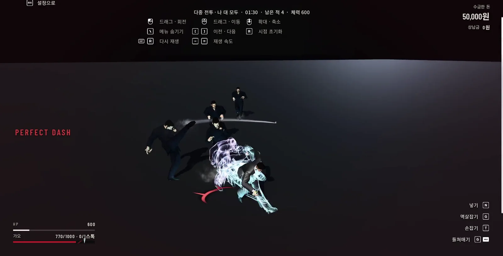
주먹이 닿기 직전에 빠져나간 순간입니다. 여기서부터 주인공만 제 속도로 움직입니다.
기술을 섞어 치거나 저스트로 막으면 가오가 차고, 맞으면 깎이게 했습니다. 같은 주먹만 반복하는 것보다 멋있게 싸우는 쪽이 이득이 되게요. 맞은 적은 이제 몸이 부르르 떨립니다. 평타 히트스톱도 넣었습니다. 원래 평타에는 일부러 멈춤을 안 넣었는데, 약, 중, 강 순서로 9, 11, 13프레임쯤 멈추게 해봤습니다. 화면이 완전히 서지 않고 확 느려지는 원래 방식 그대로고, 설정에서 켜고 끌 수 있습니다.
코마 피니시 예고도 바꿨습니다. 전에는 가슴에 금빛 틈이 벌어지는 식이었는데, 이제는 공격하는 적의 몸 윤곽이 빛으로 차오르다가 큰 공격을 헛치면 몸 전체가 번쩍입니다. 그 순간에 치면 코마입니다. 오른쪽 버튼을 꾹 눌러 모았다가 차는 강화 돌려차기도 시험 삼아 넣었습니다. 모션은 아직 임시고, 찰 때 보라색 붓 획이 휘어 나갑니다.
하루를 통째로 쓰고 안 쓰기로 한 것도 있습니다. 코마 피니시 때 피가 고리처럼 터지는 효과였는데, 판 모양으로도 해보고, 유화처럼 칠해보고, 손그림 스프라이트로도 그려봤지만 마음에 드는 게 없었습니다. 조각 이음매가 톱니처럼 보이던 것만 고쳐서 연출 뷰어에 넣어뒀습니다. 게임에는 안 나옵니다.
자잘한 버그도 몇 개 잡았습니다. 후까시에 실패해서 결투로 넘어가는 동안 옆에 있던 적에게 맞아 죽던 것, E를 길게 눌러 술과 담배를 태우는 중에 지나가던 적과 결투가 걸리던 것, 공중에서 차 지붕 모서리를 잡은 채로 후까시를 걸면 허공에 선 채로 굳던 것, 공격을 대쉬로 끊었는데 미리 눌러둔 공격이 대쉬 위로 나가던 것. 결투 시작 모션도 바꿨습니다. 가오가 비슷하면 둘 다 시작 동작을 하고, 차이가 나면 약한 쪽이 움츠러듭니다.
싸움에 지면 화면이 유리처럼 깨지는 '가오 박살' 연출도 다시 만졌습니다. 금마다 유리 두께만큼 단면이 생겨서, 천천히 도는 빛을 받는 단면만 하얗게 빛납니다. 깨진 조각은 네 면짜리 크리스털로 깎아서, 뒤집힐 때마다 면마다 밝기가 바뀌고 무지갯빛이 돕니다.
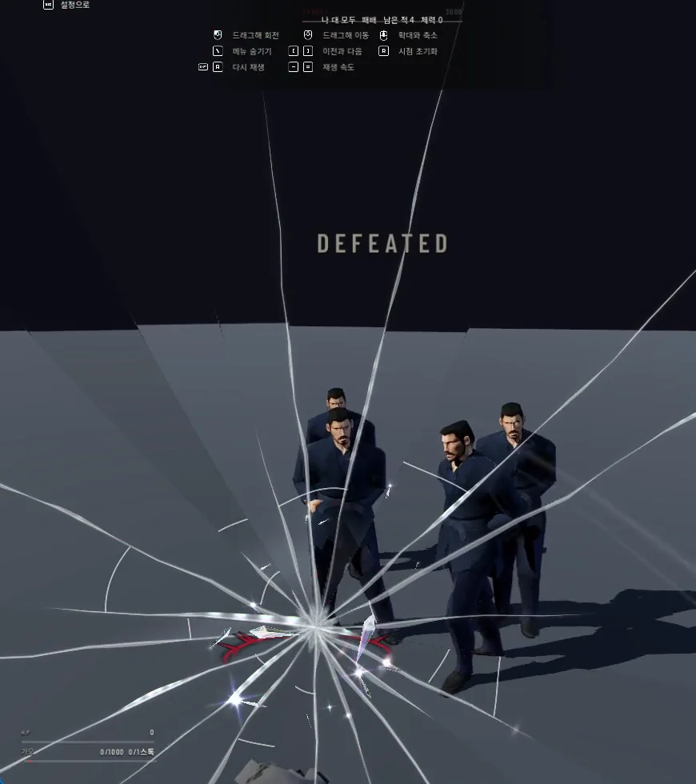
가운데 아래 조각들에 별빛이 맺힙니다.
그러면서 셰이더 비용은 3분의 1로 줄였습니다. 금이 다 뻗은 화면 기준으로 2.3~3.1ms 걸리던 게 0.75~0.78ms입니다. 금 선이 화면 높이 14분의 1마다 최대 10픽셀씩 어긋나던 것도 같이 고쳤습니다. 그래픽카드가 계산 순서를 바꾸면 값이 달라지는 난수 공식을 쓰고 있었거든요.
다른 화면 효과 셰이더도 정리했습니다. 결과가 0이 되는 범위를 식으로 미리 구해서, 그 밖의 화소는 아예 계산하지 않게 했어요. 연속 처치 붓 획이 0.96ms에서 0.28ms, 화면 밖 위협 표시가 0.21ms에서 0.015ms, 넷이 한꺼번에 뜰 때는 1.61ms에서 0.65ms가 됐습니다. 같은 프레임을 전후로 찍어 비교해 보니 화소 하나 다르지 않았고요. NPC는 가까운 순서가 아니라 내가 실제로 보고 있는 순서대로 계산을 나눠주게 바꿨습니다. 화면 안 6m 앞 NPC가 카메라 뒤 4m NPC에게 순서를 뺏겨 대충 그린 대기 동작으로 내려가거나, 나를 쳐다보던 NPC가 0.25초 만에 멍하니 원래대로 돌아가던 일이 있었거든요. 이제 반응하는 중인 NPC는 반응이 끝날 때까지 계산을 줄이지 않습니다.
점령전에는 영정이 생겼습니다. 부하가 싸우다 죽으면 흑백 사진에 검은 띠가 둘리고, 몇 번 싸워 몇 번 이겼는지, 누구에게 무슨 기술을 배웠는지, 누구와 합이 맞았는지, 어디서 이겼는지, 갚지 못한 원한, 그리고 마지막으로 남긴 말이 적힙니다. 능력치 대신 그 사람이 살았던 흔적을 남기고 싶었습니다.
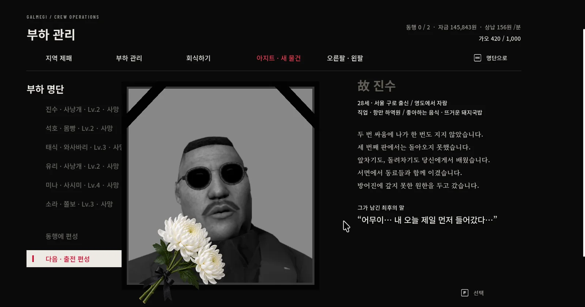
두 번 나가 한 번도 지지 않았던 진수의 영정입니다.
판이 끝나면 나오는 결과 화면도 새로 만들었습니다. 기여도 막대와 숫자가 차오르고, 다친 부하가 몇 판을 쉬어야 하는지 바로 보입니다.
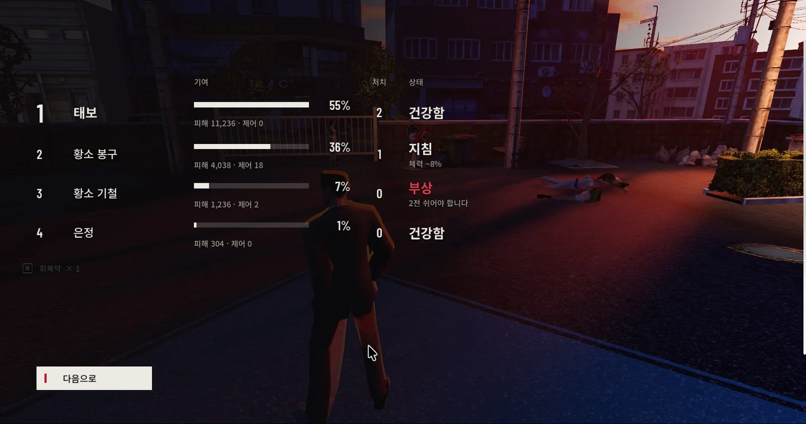
황소 기철은 다쳐서 2전을 쉬어야 합니다.
허브 흐름은 일직선으로 폈습니다. 지역을 고르고 '다음'을 누르면 바로 출전 편성이고, 확정 키나 클릭만 연타해도 전투까지 갑니다. 연출 중에는 마우스 커서도 숨깁니다. 회식은 단계마다 실제로 뭐가 오르는지(사기, 피로 회복, 다음 한 판 공격력 1.5배) 설명에 쓰고, 누르면 얻은 걸 한 줄씩 찍어 보여줍니다. 부하 기술로 몸통 들이받기도 하나 늘었습니다.
엑셀 방송은 BJ 대사를 전부 갈아엎었습니다. 조폭 사장 앞에서 살아남으려고 비위를 맞추는 말투로 바꾸고, 일곱 명 말투를 다 다르게 했습니다. 야자타임도 정해진 대본 대신 그때그때 이어지는 말싸움으로 바꿨습니다. 누가 불만을 꺼내면 가끔 다른 BJ가 선 넘게 거들고, 사장은 엎드리거나 정색하거나 받아치거나 변명합니다. 같은 반응이 연달아 나오지 않고, 그 반응을 또 다른 사람이 받아서 잇습니다. 사장이 진짜로 정색하면 다음 사람은 눈치를 보며 말을 꺼내고, 사장이 풀어줘야 분위기가 돌아옵니다.
신고가 들어온 악플러를 수위에 맞게 연달아 처리하면 매니징 콤보가 쌓이고, 속 시원하게 처리하면 시청자가 몰려옵니다.
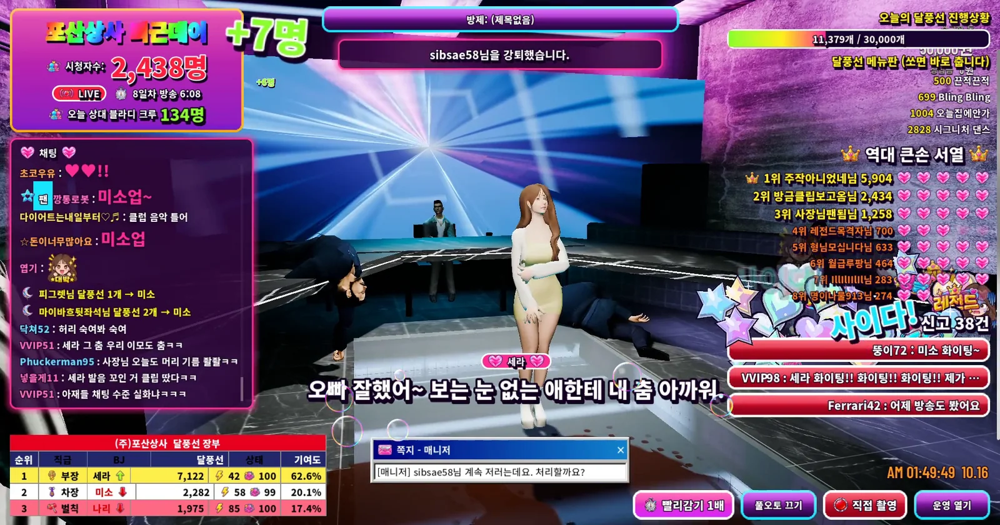
'사이다!'가 터질 때마다 왼쪽 위 시청자 수가 올라갑니다.
사장이 직접 들고 찍는 손카메라에는 손맛을 더했습니다. 잡은 구도마다 전신 풀샷, 바스트샷처럼 이름과 별점이 붙고, 숨겨진 트릭샷도 있습니다.
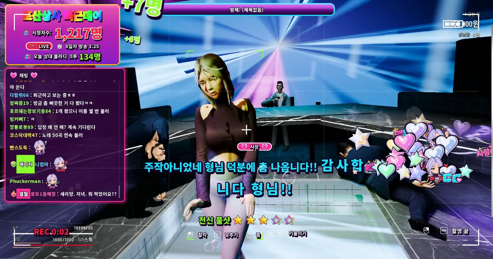
전신을 잘 잡아주니 고맙다고 합니다.
팀전 규칙도 바꿨습니다. 전에는 풍선이 쌓이면 뺨을 한 대씩 때렸는데, 이제는 화면에 뜬 후원 한 건이 정해진 개수를 넘어야 한 대가 들어갑니다. 자잘한 후원을 모아서는 못 때립니다. 큰 후원 알림이 소액 알림 뒤에 밀려 있으면, 앞의 소액들을 빠르게 넘기고 바로 띄웁니다. 맞은 얼굴을 보여주는 컷이 뒤통수를 찍던 것도 정면으로 돌렸고요. 춤은 13개 전부 다시 구웠습니다. 제자리에서만 추던 걸 영상처럼 무대를 오가게 살렸고, 반복할 때 9~89cm씩 튀던 위치를 0.2~3.2cm로 줄였습니다. 동작을 다른 몸에 옮기면서 무릎 사이가 영상보다 좁아지던 것도 원래 폭으로 되돌렸습니다.
게임 안에 흩어져 있던 확률도 한 장에 모아놓고 하나씩 정했습니다. 즉석복권 당첨금은 500원에서 2,000원으로 올렸고, 멱살을 잡았을 때 뿌리치는 건 체력이 70%보다 많이 남은 적만 반반 확률로 하게 했습니다. 방송 후원은 열에 아홉이 10~100개, 나머지가 100~500개이고, 만 번에 세 번꼴로 500~3,000개가 터집니다. 전봇대 변압기는 한 대에 최대 3개까지만 달립니다.
바다도 좀 만졌습니다. 어촌 밤바다가 어떤 날씨에서든 하얗게 번쩍였는데, 물의 반사광이 주변 빛의 색과 세기를 안 따르고 있어서였습니다. 배 충돌은 배 모양대로 미리 구운 충돌로 바꿔서, 광선으로 비교했을 때 맞는 비율이 48.5%에서 91.1%가 됐습니다. 이제 조타실 지붕에도 올라설 수 있습니다. 하늘 그림 하나는 지평선이 실제보다 16도 아래에 그려져 있어서, 이 그림을 쓰는 하늘 15개에서 지평선 자리에 구름 밑바닥이 걸려 있었습니다. 이것도 맞췄고, 시장 광장의 '푸른 밤' 하늘이 새카맣던 것도 고쳤습니다.
마지막 이틀은 NPC 외형을 정리하는 데 썼습니다. Blender 원본 파일에서 게임까지 버튼 하나로 넘어가게 리깅 도구를 고쳤고, 한 캐릭터를 넘기는 데 758초 걸리던 게 414초가 됐습니다. NPC 11명은 만화풍 외형을 빼고, 텍스처를 몸 1024, 얼굴 2048, 머리카락 1024 세 장으로 규격을 맞췄습니다. 팔다리 기본 자세도 전부 공용 뼈대에 맞췄습니다. 기본 자세가 조금만 어긋나 있어도 모든 동작이 그만큼 틀어지거든요. 고개를 돌리면 얼굴이 목에서 떨어지던 캐릭터, 앞차기를 하면 다리 피부가 치마를 뚫고 나오던 캐릭터도 고쳤습니다.
그리고 화면 문구에서 '소지금 · 2,358원'처럼 가운뎃점으로 늘어놓던 글을 약 100개 파일에 걸쳐 문장이나 괄호, 쉼표로 바꿨습니다.
- 시네마틱 카메라 모드: 싸움 박자 읽기, 샷 카드 32장, 화면을 직접 재는 눈, 전투와 필드와 대화 영역 분리, 테이프 회귀 검사 - 대화 감독(서열 각도), 자체 대본 형식 .gsc, 번역 준비 문서, 스토리 정본 v0.3 - 플레이 카메라: 벽 등지기 눈, 머리 숨김은 1인칭에서만, 휠 한 칸 이중 계산 수정 - 저스트 대쉬(세상 감속), 저스트 블락(반격 모드), 전투 멋 가오, 맞은 적 떨림, 평타 히트스톱 설정 - 코마 예고를 몸 빛으로, 강화 돌려차기(임시), 피 터짐은 연출 뷰어에 보관 - 버그: 결투 진입 중 피격, E 길게 누르는 중 결투, 공중에서 턱 잡고 후까시, 후딜 캔슬 선입력 - 가오 박살 유리: 단면 빛, 크리스털 조각, GPU 비용 3분의 1 - 화면 효과 셰이더 헛계산 제거(넷 동시 1.61 → 0.65ms), NPC 계산을 보이는 순서로 - 점령전: 영정, 결과 화면, 일직선 허브, 회식 효과 표시, 몸통 들이받기 - 엑셀 방송: BJ 대사 교체, 그때그때 이어지는 야자타임, 매니징 콤보, 손카메라 트릭샷, 후원 한 건 타격, 큰 알림 앞당기기, 춤 13개 재굽기 - 확률 정리(복권, 멱살, 후원 크기, 변압기) - 바다 반사광, 배 충돌(48.5 → 91.1%), 하늘 지평선, 시장 푸른 밤 하늘 - NPC 11명 외형 규격화, 기본 자세 공용 뼈대 정렬, 원본에서 게임까지 버튼 하나 - 화면 문구 가운뎃점 나열 정리
넣어놓고 못 돌려본 목록이 또 길어졌습니다. 그럼 다음에 또...
속은 싹 디비고, 방송엔 팀전 붙였습니다
지난 글 끝에 다음 글은 "보이는 건 똑같은데 속은 다 바뀌었습니다" 같은 글이 될 거라 했는데, 반은 맞고 반은 틀렸습니다. 속은 진짜 싹 다 디빘습니다. 근데 그 사이에 엑셀 방송이 한 판 더 커져가꼬, 보이는 것도 꽤 바뀌었네예. 그리고 이번 글은 함 부산 말로 써봤습니다. 게임에 부산 사투리 대사가 많이 들어가서, 연습 겸 해봤어예. 읽다가 어색한 데가 있으면 아직 제 사투리가 덜 익어서 그런 거니까 너그럽게 봐주이소.
먼저 리팩터 얘기부터 하겠습니다. 게임 코드가 커지면서 한 파일이 다른 파일 속을 직접 만지는 데가 억수로 많아졌습니다. 이러면 하나 고칠 때 어디가 같이 깨질지 알기가 어렵습니다. 세어보니 NPC 쪽이 299군데, 주인공 쪽이 178군데, 방송 쪽이 243군데, 캐릭터 공통 쪽이 22군데였습니다. 이걸 전부 0으로 만들었습니다. 이제 바깥에서는 열어둔 함수로만 부를 수 있습니다. 커밋 제목은 refactor: 역할 분리 S1~S4 — 바깥은 공개 함수만, bb에서 전투 시간·교전 등록부 분리입니다.
제일 덩치가 큰 건 주인공 스크립트였습니다. 한 파일이 7,066줄이었어예. 여기서 네 덩어리를 따로 떼냈습니다. 턱 오르기·매달리기·벽차기 같은 지형 이동, 손잡기·끌기·멱살·던지기 같은 몸 다루기, 대쉬·저스트 회피, 그리고 표적 고르기·록온입니다. 그래가꼬 지금은 4,381줄입니다. NPC도 붙잡혀 끌려가거나 던져지는 쪽, 가오에 쫄거나 놀라는 반응 쪽을 따로 빼서 4,397줄에서 3,535줄로 줄었습니다. 동작은 하나도 안 바꾸고 옮기기만 하는 게 원칙이라, 한 덩어리 뗄 때마다 떼기 전하고 뗀 뒤를 같은 검사로 돌려서 결과가 같은지 단디 봤습니다. 그리고 프로젝트 스크립트 737개를 전부 컴파일해서 하나도 안 깨지는 걸 처음 봤습니다. 직전까지도 하나는 깨져 있었거든예.
옮기다 보니 원래 숨어 있던 버그도 몇 개 나왔습니다. 사람 많은 데서는 버벅이지 않게 물리 계산을 1초에 60번에서 30번으로 줄이는데, 그때 대쉬 세 번 연달아 하기가 안 이어졌습니다. 무적은 '계산 몇 번 했나'로 세고 다음 대쉬 받아주는 시간은 '몇 초 지났나'로 세니까, 계산 횟수가 반으로 줄면 무적이 그 시간을 통째로 덮어버린 겁니다. 매달린 채로 R 눌러서 재시작하면 옛날 턱으로 도로 끌려가는 것도 있었고, 후까시나 미니게임처럼 상대를 바로 찍어서 결투에 들어가면 그놈을 눕혀도 결투가 안 끝나고 갇히는 것도 있었습니다. 후까시 걸었다가 지면 그 상대랑 결투로 이어져야 되는데 그게 안 열리던 것, 공격하자마자 술이나 회복약 누르면 씹히던 것도 이번에 잡았습니다.
하나 웃긴 것도 있었습니다. 가오 검사 하나가 같은 코드로 돌려도 여섯 번에 한 번꼴로 실패했습니다. 와 그런지 한참 파보니 게임 버그가 아이라 검사 쪽 문제였습니다. 주인공이 주변 사람을 알아채는 범위가 앞쪽으로 4.1m 쏠려 있는데, 검사가 상대를 늘 같은 자리에 세워놔서 주인공이 반대쪽을 보고 있으면 등 뒤가 됐던 겁니다. 뒤에 서 있으니 못 알아보는 게 맞습니다.
지난 글에서 야구장 의자 줄마다 충돌을 새로 깔았다고 했는데, 그거 결국 다 걷어냈습니다. 위층 좌석 충돌이 실제 계단보다 3m나 붕 떠 있어가꼬 안 보이는 벽이 돼 있었거든예.
이제 엑셀 방송입니다. 한 번 방송하는 흐름을 세 단계로 잡았습니다. 코너로 팬을 모으고, 상대 크루랑 팀전을 붙고, 진 쪽은 퇴근전쟁을 합니다.
팀전 상대는 우리 출연자들한테 러시아·중국 쪽 다른 옷을 입힌 미러 크루입니다. 코너 하는 동안 상대 시청자 수를 위에 띄워두고, 팀전 들어가면 양쪽 시청자 수가 가운데로 모여서 부딪히는 VS 연출이 나옵니다. 팀마다 풍선 게이지가 있어서 정해진 만큼 차면 뺨을 한 대씩 때립니다. 버티는 힘이 바닥나면 KO고, 시간이 다 되면 다음 한 대 들어갈 때까지 연장합니다.
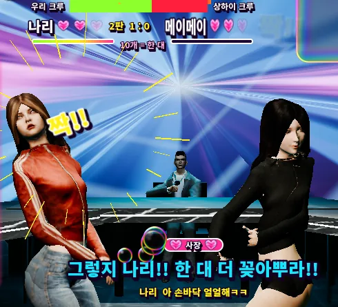
풍선 10개 차면 뺨 한 대 들어갑니다. 이 판은 나리가 먼저 한 대 넣었네예.
지면 퇴근전쟁입니다. 진 만큼을 우리 BJ들이 마이너스로 나눠 지고, 자기 앞 풍선으로 그걸 다 갚아야 퇴근할 수 있습니다. 팀전 1등은 빼주고예. 끝까지 못 갚고 남은 사람은 클로즈업이 잡히고 '천민' 도장이 찍힙니다. 천민이 되면 저격하는 악플러가 붙고, 다른 BJ하고 사장한테도 꼽을 먹습니다. 장부 직급도 천민으로 떨어지고예. 팀전을 한 판 이기거나 퇴근전쟁 빚을 갚으면 벗어날 수 있습니다.
코너도 손봤습니다. 무대 카드를 내리고, 춤은 큰 후원이 들어오면 그 보답으로 추는 걸로 바꿨습니다. 춤은 모캡으로 딴 클립을 넣어서 무대마다 무작위로 고르고, 클럽 곡 빌드업이랑 드랍 효과음도 붙였습니다. 춤 곡은 CC0 클럽 곡으로 갈았습니다. 직급이 오르면 BJ마다 자기 춤도 하나씩 열립니다.
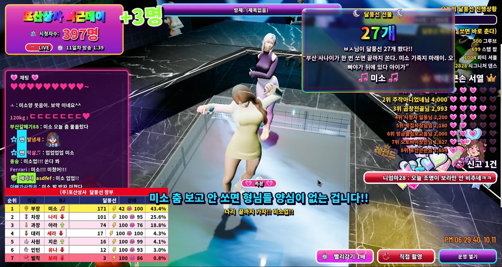
오른쪽 위 달풍선 메뉴판 금액대로 쏘면 그 자리에서 바로 춥니다.
새 코너로 '뺏기 한 판'도 넣었습니다. 시간이 다 되면 카운트를 세는데, 사장이 '제로!'를 누를 때까지 계속 늘어납니다. 막판에 후원이 몰리는 대신, 너무 질질 끌면 시청자들이 짜증을 냅니다. 끝나면 꼴찌가 1등한테 판돈만큼 넘깁니다.
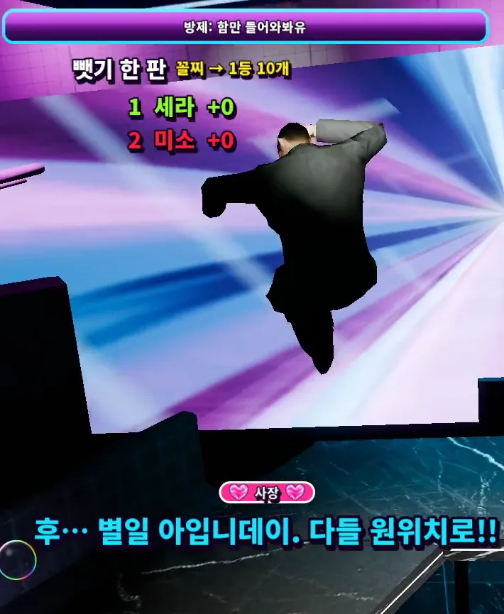
뺏기 한 판 도중에 무대로 난입한 놈을 사장이 직접 내보내는 장면입니다. 난입을 막으면 가오도 오르고 시청자도 몰려옵니다.
다만 퇴근전쟁·천민·뺏기 한 판·보답 춤은 아직 제대로 돌려보지는 못했습니다. 밸런스 잡을 때 한꺼번에 돌려볼 생각입니다. 방송을 처음 하는 사람도 읽을 수 있게 방송 백서도 다시 썼고, 궁합 도감에는 뭘 가졌는지랑 어떻게 여는지 힌트를 달았습니다.
점령전에는 '부하 파견'이 생겼습니다. 싸우는 도중에 U키나 관전 띠의 버튼을 누르면 가오를 써서 부하를 한 명씩 판에 들입니다. 능력치는 그 판 동료들 평균이고, 값은 가오 최대치의 10%입니다. 이 값은 아직 임시입니다. 명단에 없는 임시 전투원이라 다치거나 죽어도 기록에 안 남습니다. 거점판도 이제 적을 다 눕히면 게이지 상관없이 바로 이깁니다. 전에는 다 눕혀도 게이지를 끝까지 채워야 이겼거든예.
마지막으로 스토리 쪽입니다. 방송 사장 대사하고 본편 장면 하나를 초안으로 뽑아서 제가 줄마다 고쳤고, 고친 말에서 규칙을 떼서 부산 사투리 교정 기준을 0.4판까지 키웠습니다. '~잉'은 전라도 말이라 안 쓰고, '왜'는 '와'로 쓰고, 무엇보다 윗사람한테 하는 말하고 아랫사람한테 하는 말이 아예 다르다는 것 같은 규칙들입니다. 이 글도 그 기준하고 검사기로 함 걸러봤습니다. 어디가 어색한지 짚어주시면 그것도 기준에 보태겠습니다.
- 리팩터: 다른 파일 속을 직접 만지던 곳 742군데 → 0 - 주인공 스크립트 네 덩어리 분리(7,066 → 4,381줄), NPC 두 덩어리 분리(4,397 → 3,535줄) - 히트스톱·슬로모와 필드 교전 등록을 따로 빼냄 - 프로젝트 스크립트 737개 전체 컴파일 실패 0 - 버그: 물리 30번일 때 3단 대쉬, 매달린 채 재시작, 결투 갇힘, 후까시 패배 후 결투, 공격 직후 술·회복약 씹힘, 그래픽 설정이 잔상에 안 먹던 것 - 야구장 좌석 충돌 제거 - 엑셀 방송: 팀전·퇴근전쟁·천민, 뺏기 한 판, 큰 후원 보답 춤, 모캡 춤·클럽 곡·BJ 개인 춤, 방송 백서·궁합 도감 힌트 - 점령전: 부하 파견, 거점판 전멸 승리 - 부산 사투리 교정 기준 v0.4
다음엔 이번에 넣어놓고 못 돌려본 것들을 한꺼번에 돌려볼 차례입니다. 그럼 다음에 또...
갈아엎기 전에 한 번 묶어둡니다
이번 글은 이틀 치라 짧습니다. 곧 코드 전체를 한 번 갈아엎는 리팩터를 시작하려고, 그 전에 쌓인 걸 전부 커밋해뒀습니다. 리팩터 중에는 눈에 보이는 변화가 별로 없을 테니, 그 전에 한 번 적어둡니다.
이틀 동안 제일 오래 붙잡은 건 싸울 때 카메라입니다. 한 명이랑 붙을 때와 여럿에게 둘러싸였을 때 카메라 거리·높이·어깨 위치가 달라지고, 록온 중에 마우스나 스틱을 휙 꺾으면 옆 상대로 넘어갑니다. 상대가 쓰러지면 다음 적으로 알아서 넘어가고요. 화면 밖에서 나를 노리는 적은 내 발밑 둘레에 칼날 모양 호로 알려줍니다. 화면 가장자리에 띄우는 것보다 캐릭터 둘레에 띄우는 쪽이 싸우면서 읽기 편하더라고요. 가까울수록, 공격을 준비할수록 굵어지고 하얗게 달아오릅니다.
1대1 결투 카메라는 비스듬한 3/4 각도에서 두 사람을 같이 담는 구도로 바꿨습니다. 결투 중에는 마우스가 몸을 흔드는 데 쓰여서 카메라를 돌릴 손이 없거든요. 그래서 처음 잡은 쪽에서 끝까지 버티고, 사이에 끼어 화면을 가리는 구경꾼은 흐리게 지웁니다. 복도에서 싸우면 카메라가 옆으로 빠져서 따라가는 구도도 시험 삼아 넣어봤습니다.
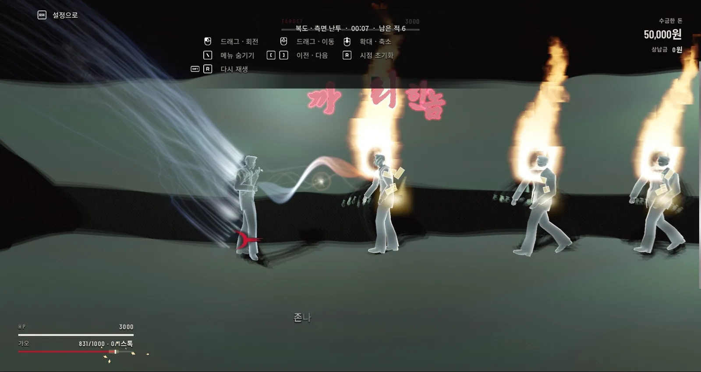
복도를 옆에서 보면 이렇습니다. Q를 누르고 있어서 상대들 머리에 불이 붙어 있어요.
여기서 휠로 확대하면 주인공 머리가 사라지는 버그가 있었는데, 1인칭 머리 숨김이 실제 카메라 거리가 아니라 내가 굴린 휠 값만 보고 있어서였습니다. 지금은 1인칭으로 끝까지 당겼을 때만 머리를 숨깁니다.
적들이 한꺼번에 덤비는 문제도 손봤습니다. 복도를 AI 봇에게 실제 키 입력만으로 깨보라고 시켰더니 7판 중 한 번 겨우 클리어했고, 한 대도 안 맞고 깨는 건 끝내 못 했어요. 회피하고 나면 1초 동안 굳는데 적은 저마다 0.85초마다 들어오니, 둘만 붙어도 안 맞을 방법이 거의 없었던 겁니다. 그 봇 덕분에 처형했는데 피해가 안 들어가던 버그도 하나 찾았습니다. 그래서 '공격 티켓'을 만들었습니다. 티켓을 쥔 적만 때릴 수 있고, 나머지는 2m 밖에서 둘러싸고 기다립니다. 티켓 쥔 놈이 휘청이거나 넘어지면 바로 다음 놈에게 넘어가고요. 난이도도 밑바닥·폭력·광신도·지옥 네 단계로 합쳤습니다. 한 번에 덤비는 적이 1·1·2·제한 없음 순이고, 기본은 지옥입니다. 광신도 난이도에서는 같은 봇이 복도를 58.8초 만에 한 대도 안 맞고 깼습니다.
띄우기와 공중 추격도 들어갔습니다. 섬머솔트로 띄우고 스페이스로 따라 올라가서 내려찍는 식이에요. 처음 만든 버전을 두고, 참고 영상의 체공 시간에 숫자를 전부 맞춘 두 번째 버전도 만들어봤는데 해보니 첫 번째가 나았습니다. 꼭대기에서 1.9초쯤 둥실 떠 있는 게 오히려 맛이 있더라고요. 숫자가 맞는다고 느낌이 맞는 건 아니었습니다. 제대로 된 애니메이션이 생기면 그때 다시 맞춰볼 생각입니다.
반대로 통째로 되돌린 것도 있습니다. 카운터를 맞으면 더 오래 굳게 하고, 맞을 때 팔이 흐느적거리는 걸 물리 쪽에서 잡는 작업이었는데 결국 전부 걷어냈습니다(revert: 이번 세션 전투·랙돌 변경 되돌림 — 잡기 뿌리치기만 남김). 살아남은 건 하나, 멱살을 잡으면 멀쩡한 적이 절반 확률로 0.35초 뒤에 뿌리치고 밀쳐내는 것입니다. 밀치는 동작은 아직 펀치 모션을 빌려 쓰고 있어요.
지난번에 만든 Q 써멀뷰에도 살을 붙였습니다. 상대를 겨누면 내 가슴에서 띠가 묵직하게 휘면서 날아가 꽂히고, 꽂힌 자리에 용접할 때 같은 섬광이랑 불똥이 튑니다. 다른 상대로 옮기면 가는 번개가 지그재그로 먼저 가고 띠 꼬리가 뒤따라오고요. 겨눔을 풀면 띠가 요동치면서 나한테 돌아와 감겨 사라집니다. 띠는 8m 안에 있는 상대에게만 붙습니다. 그보다 멀면 불꽃과 사신의 눈만 보여요.
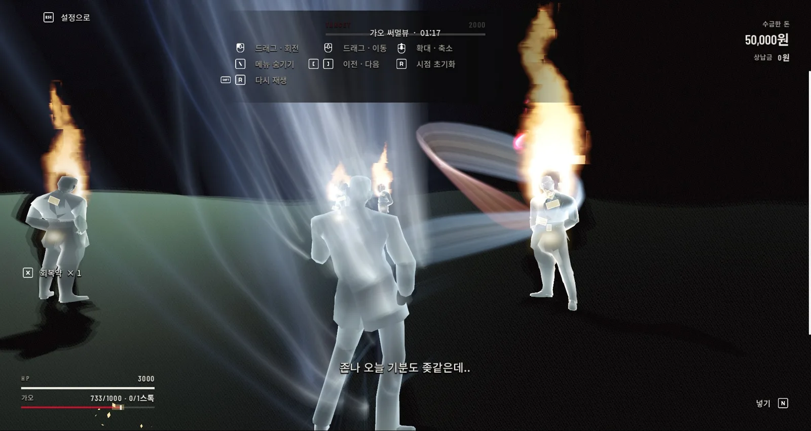
오른쪽 상대에게 띠가 꽂히기 직전입니다.
술도 조금 바뀌었습니다. 전에는 가오가 꽉 차면 술을 못 마셨는데, 이제는 그래도 마십니다. 가오는 더 안 오르고 취기만 올라요. 취기는 술 세기대로 소주가 한 번에 0.22, 맥주가 0.14씩 오릅니다. 싸우는 중에도 마실 수 있는데, 마시다 맞으면 끊깁니다. 그리고 버튼을 눌렀는데 아무 일도 안 일어나면, 이제는 거절하는 소리와 함께 왜 안 되는지를 화면 아래 가운데에 띄웁니다. 체력이 가득한데 회복약을 누르면 그렇다고 알려주는 식이에요.
눈에 덜 띄는 쪽으로는 군중 작업이 있습니다. 가까운 사람만 매번 생각하고, 멀수록 몇 박자에 한 번만 판단하고 그 사이엔 길을 따라 걷기만 하게 바꿨습니다. 홍등가에서 41명이 한꺼번에 상황을 살피는 장면이 한 프레임 57ms에서 18ms로 줄었습니다. 야구장은 관중석 의자 충돌을 Blender 원본에서 따로 만들도록 바꿨습니다. 충돌 삼각형이 258만 개에서 67만 개로 줄었는데, 재보니 걷거나 부딪힐 때 드는 비용은 전후가 똑같았어요. 빨라진 건 없고 정리만 된 셈입니다.
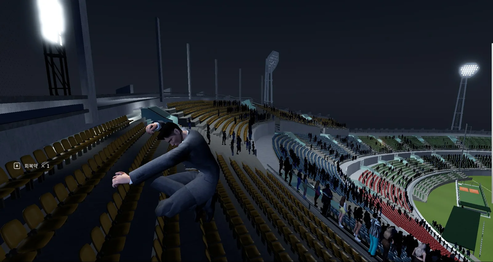
밤 야구장. 의자 줄마다 충돌을 새로 깔았습니다.
Tab 메뉴의 기술 탭은 글자 크기 규칙부터 새로 정했습니다. 화면마다 주인공은 하나, 글자 크기는 12·17·26·40처럼 한 단계씩 건너뛰게요. 고른 기술 이름은 미리보기 옆에 세로로 크게 쓰고, 공격 루트 칸 폭은 그 기술이 걸리는 프레임 수에 비례하게 바꿨습니다. 루트 한 줄이 그대로 시간 막대가 되는 거죠.
마지막으로 리팩터 예고편. 신호등이나 빛 효과처럼 코드가 하나하나 조립하던 것들을 씬 파일로 빼냈습니다(refactor: 코드로 조립하던 신호등·빛 효과를 프리팹으로 이전). 신호등 표지도 영어 CAR/WALK에서 '차량/보행'으로 바꿨고요. 이런 걸 게임 전체에 걸쳐 하는 게 다음 일입니다.
- 전투 카메라: 1:1·다수 구도, 록온 휙 전환·자동 이양, 화면 밖 위협 칼날 호 - 결투 3/4 투샷, 가리는 구경꾼 흐리기, 복도 측면 구도, 확대 시 머리 사라짐 수정 - 공격 티켓, 난이도 네 단계 통합(밑바닥·폭력·광신도·지옥), 처형 무피해 버그 수정 - 런처·공중 추격·내려찍기(1차 버전 유지) - 카운터 피격·랙돌 변경 되돌림, 멱살 뿌리치기만 유지 - 써멀뷰 띠 붙기·옮기기·거두기 연출 - 가오가 차도 술 마시기, 술 세기별 취기, 안 먹힌 조작 이유 안내 - 군중 원거리 판단 줄이기(41명 57ms → 18ms), 야구장 의자 충돌 원본 이전 - 기술 탭 글자 위계·세로 이름·프레임 비례 루트 - 신호등·지갑 빛·써멀 불꽃 프리팹화
다음 글은 아마 "보이는 건 똑같은데 속은 다 바뀌었습니다" 같은 글이 될 것 같습니다. 그럼 다음에 또...
상대의 가오가 눈에 보이기 시작했습니다
이번 주에 제일 공들인 건 Q 버튼입니다. Q는 원래 상대에게 후까시를 거는 버튼인데, 거는 순간까지는 이길지 질지 알 방법이 없었어요. 그래서 이번엔 Q를 누르고 있는 동안 시간이 느려지고, 화면이 열화상 카메라처럼 바뀌게 했습니다. 상대 몸에서 불꽃 같은 게 피어오르고, 내 쪽에서도 가닥 같은 기운이 뻗어 나갑니다. 센 놈일수록 불이 크고 사납고요. 숫자는 일부러 하나도 안 띄웠습니다. 눈으로 보고 감으로 판단하라는 거죠.
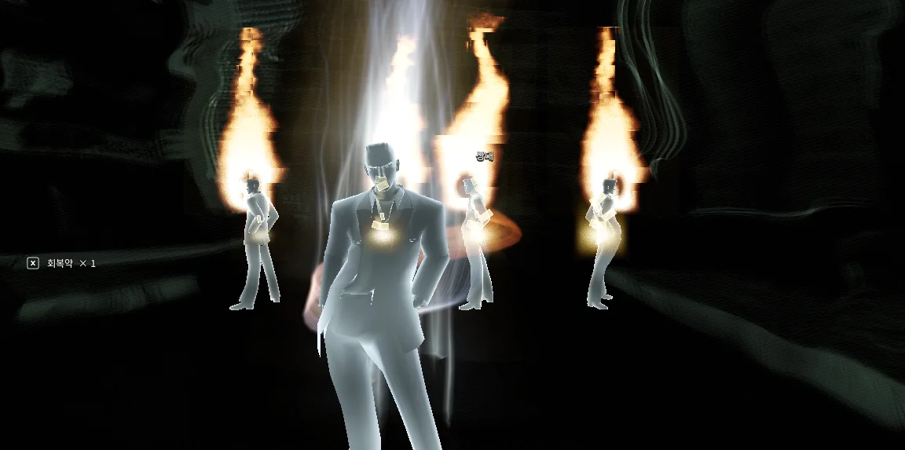
센 놈일수록 머리 위 불이 큽니다. 금빛으로 빛나는 건 지갑이에요.
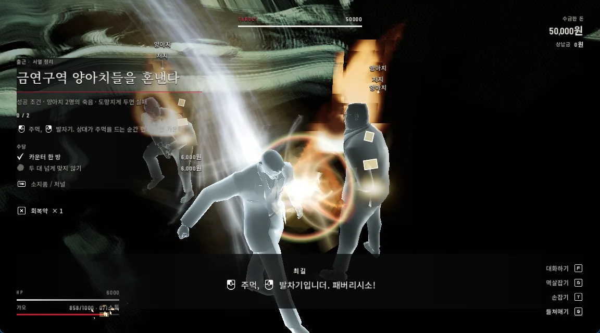
써멀뷰 상태로 싸우면 이런 느낌입니다.
그 위에 '사신의 눈'이라는 걸 하나 더 얹었습니다. 겨눈 상대 머리 위에 따까리, 까리한놈, 행님, 오야붕, 괴물 같은 평가가 열 단계로 뜹니다. 다만 이 글자들이 공중에 이리저리 흩어져 있어서, 처음 보는 각도에서는 잘 안 읽혀요. 카메라를 살짝 틀어야 글자가 맞춰지면서 제대로 보입니다. 그 '기웃거리는' 동작이 곧 상대를 재보는 행동이 되게 하고 싶었습니다. 평가도 일부러 조금씩 흔들리게 해놨습니다. 아리까리한 놈이 내 위인지 아래인지 헷갈려야 거는 맛이 있으니까요. 판정 자체는 정확하고, 헷갈리는 건 눈에 보이는 쪽뿐입니다.
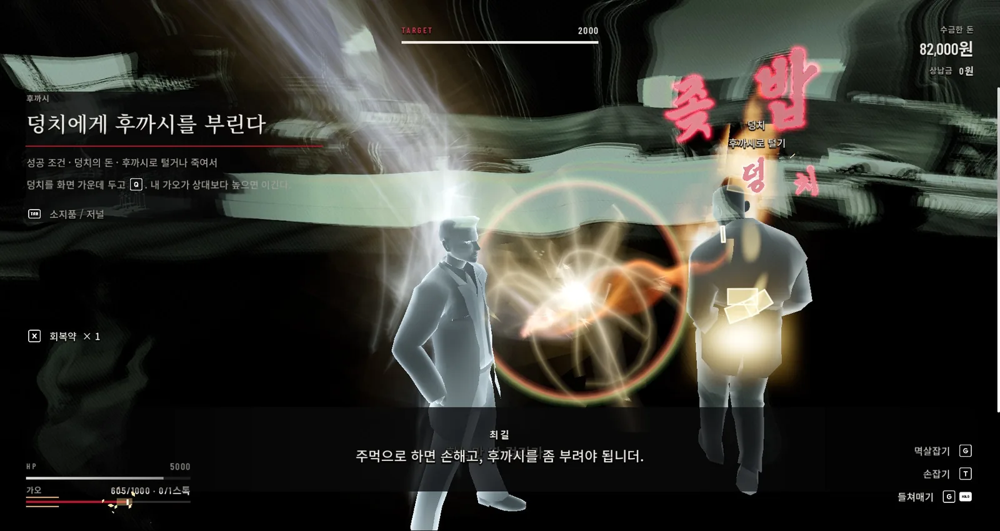
Q를 누르고 있으면 이렇게 보입니다. 머리 위 글자가 사신의 눈이고, 이 덩치는 '좆밥'이라네요.
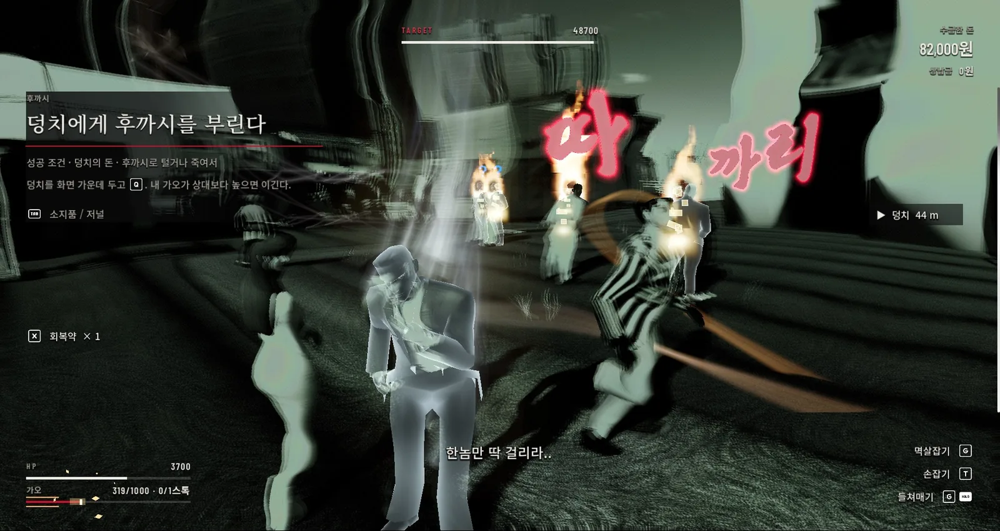
길 가는 사람들 중에 누가 만만한지 둘러보는 중. 이쪽은 '따까리'.
담배 연기도 새로 만들었습니다. 전에는 연기가 몸을 뚫고 지나갔는데, 이제는 몸을 비켜서 흘러가고, 걸으면 흐트러지고, 가만히 서 있으면 뭉게뭉게 고입니다. 들이마시면 불씨가 빨갛게 달아오르면서 연기가 잠깐 멎었다가, 떼면 입에서 후 하고 나와요. 한 개비 물고 있는데 또 피우면 옆에 한 개비를 더 끼웁니다. 가오를 한 번에 채울 때 한 갑을 통째로 꽂으면 개비들이 동그랗게 고리를 만듭니다. E를 길게 누르면 가지고 있는 술·담배를 한꺼번에 태워서 가오를 끝까지 채우는 기능도 붙였습니다. 소주병은 다 마시면 빈 병을 무기로 쥐고 있게 됩니다.
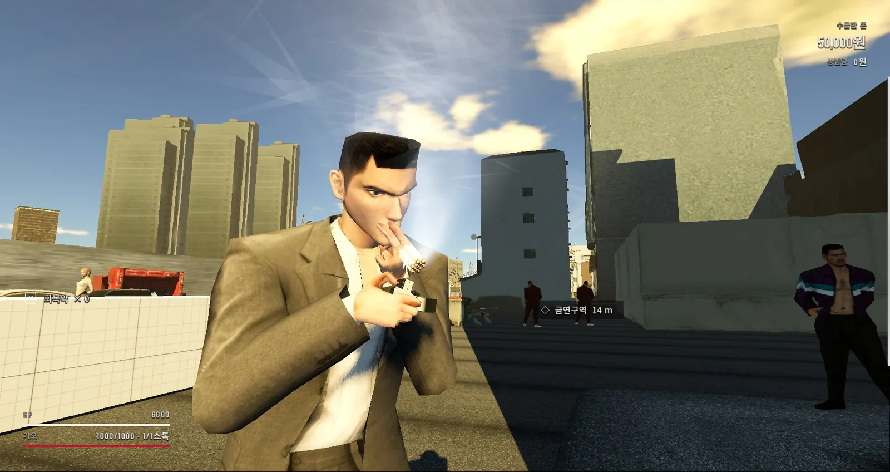
담배 붙이는 동작. 이번 주에 제일 많이 본 장면입니다.
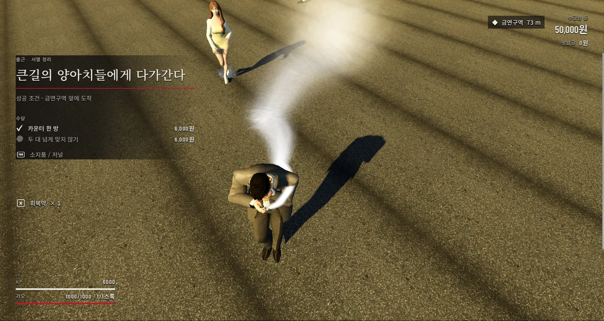
걸으면 연기가 이렇게 뒤로 흘러갑니다.
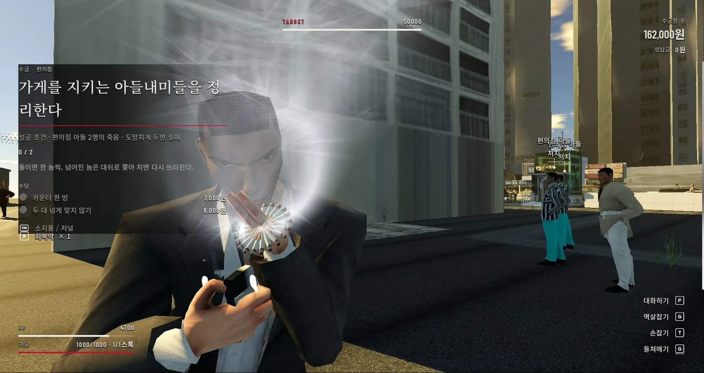
물고 있는데 또 피우면 이렇게 됩니다.
돈을 뜯었을 때도 달라졌습니다. 바닥에 흩날린 지폐가 화면 위 지폐로 바뀌어서 소지금 칸까지 휘어 날아가고, 닿을 때마다 돈 들어오는 소리가 납니다. 때릴 때와 맞을 때의 화면 흔들림도 나눴습니다. 내가 때릴 때는 Blender에서 손으로 키를 찍은 흔들림을 쓰고, 맞을 때는 화면이 뒤로 툭 밀리는 식이에요. 마지막 한 명을 쓰러뜨리는 순간엔 0.25배 슬로모션이 걸립니다.
눈에 안 보이는 고장도 몇 개 잡았습니다. 결투에서 분명히 막았는데 맞거나, 안 막았는데 막히는 일이 있었는데, 알고 보니 맞은 직후 2초 동안 팔의 물리 판정이 흐느적거리면서 눈에 보이는 팔과 최대 35cm까지 어긋나 있었습니다. 보이는 팔은 얼굴 앞에 있는데 판정용 팔은 허리춤에서 놀고 있었던 거죠. 같은 대전을 돌려 보니 이런 경우가 10번에서 0~1번으로 줄었습니다. "5분쯤 하면 게임이 멈춘다"는 문제도 있었는데, 한 번에 두 명을 카운터로 맞히면 주인공이 영원히 굳어버리는 버그였습니다. 카메라랑 HUD가 주인공한테 붙어 있으니 화면 전체가 멈춘 것처럼 보였어요.
그리고 해변 폭풍우. 비가 물건 위에 튀는 물보라가 잘 안 보인다고 해서 손을 댔다가, 이틀 동안 네 번 고치고 세 번 되돌렸습니다. 격자로 찍어보고, 노이즈로 흩뿌려 보고, 가까운 곳에 몰아줘 봤는데 나란히 놓고 보면 결국 원래 것이 제일 나았어요. 남은 건 두 가지입니다. 물보라가 너무 가까운 표면에 묻혀 투명하게 지워지던 것 하나 고치고, 덩어리 모양은 그대로 둔 채 보이는 곳의 덩어리 수만 666개에서 1,056개로 늘렸습니다. 프레임 시간은 거의 그대로고요. 잘 되던 걸 '개선'하는 게 제일 위험하다는 걸 이번에도 배웠습니다.
마지막으로 부끄러운 얘기 하나. 쌓인 작업 기록을 AI한테 정리시켰다가, 그 정리 스크립트가 바로가기처럼 연결된 폴더를 타고 실제 프로젝트 안까지 들어가서 프로젝트 파일 8천여 개를 옮겨버렸습니다. 다행히 지우기 전에 사본을 떠놓는 방식이라 전부 되살렸는데, 그날은 정말 심장이 내려앉았습니다.
- 가오 써멀뷰: Q를 누르는 동안 감속 + 열화상 연출, 숫자 숨김, 상대 불꽃·내 기운 가닥, 게이지 끝 불씨 - 사신의 눈: 10단계 평가, 각도를 틀어야 읽히는 글자, 흔들리는 평가와 확률 승부 - 담배 연기 재작업(비켜 흐르기·들이마시기·내뱉기), 개비 덧꽂기, 가오 풀충전(E 길게) - 수금 지폐가 소지금 칸으로 날아가는 연출, 회복약 빈 병 무기 - 타격 흔들림 때리기/맞기 분리, 마지막 처치 슬로모션, 처치 경직 복원 - 결투 가드 판정 어긋남 수정(10건 → 0~1건), 영구 정지 버그 3건 수정 - 해변 폭풍우 물보라 근접 지워짐 수정, 보이는 덩어리 수 증가 - 테스트용 사흘짜리 이야기 연결(첫째 날 귀가·잠 → 둘째 날 → 셋째 날 결산)
Q 버튼 하나에 일주일을 썼는데, 그래도 이 게임에서 제일 많이 누를 버튼이라 아깝지 않습니다. 그럼 다음에 또...
만든 만큼 무거워져서, 이틀은 치웠습니다
지난 글에서 판을 크게 벌렸더니, 바로 대가가 왔습니다. 게임이 무거워졌어요. 맵에 들어가는 데 오래 걸리고, 들어가서도 사람들이 한꺼번에 움직이기 시작하는 순간 툭툭 끊겼습니다. 그래서 이번 며칠은 새로 만든 것보다 치운 게 더 많습니다.
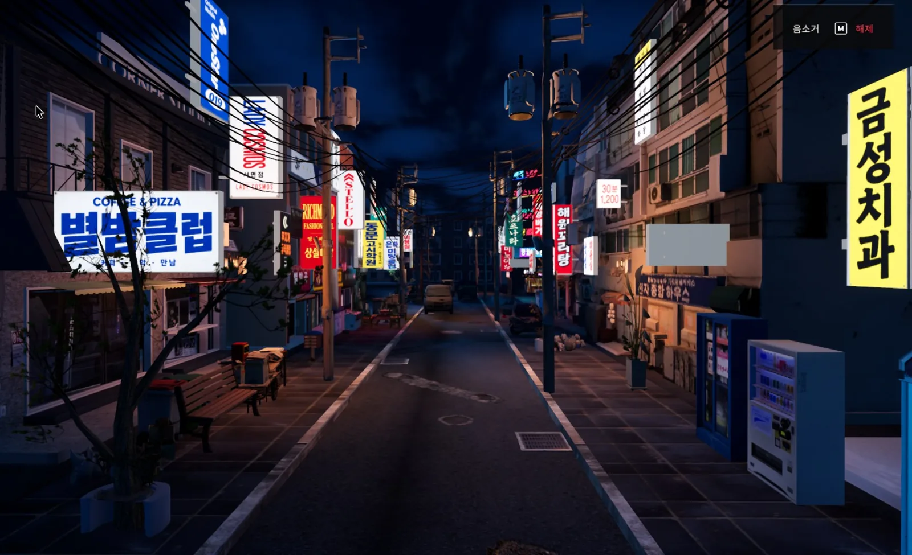
치우는 사이사이 동네도 조금씩 손봤습니다. 간판은 전부 지어낸 가게들이에요.
4일 커밋 제목들을 보면 그날 기분이 그대로 남아 있습니다. "최적화 전 세이브 코덱스가 두렵구나", "진짜 최적화 - 코덱스형님이 온다", 그리고 세 시간 뒤 "코덱스 ○○놈이 렉이 너무 심해서 일단 접고...". 6일엔 "이번엔 클로드가 속을 썩이는구나"입니다. AI 둘을 번갈아 쓰면서 번갈아 화를 냈네요. AI는 "검사 통과, 불일치 0건"이라고 깔끔하게 보고하는데, 원자료를 직접 열어보니 맵 로딩 시간이 오히려 두 배 가까이 늘어 있었습니다. 검사 항목은 다 맞는데 정작 제가 원하던 숫자는 안 재고 있었던 거죠. 뭘 재야 하는지부터 똑바로 말해줘야 한다는 걸 다시 느꼈습니다.
결국 찾아낸 건 대부분 시시한 것들이었습니다. 주인공이 맵에 등장할 때 0.9초쯤 화면이 멈췄는데, 그중 0.888초가 Tab 메뉴 화면을 그 자리에서 처음 읽느라 걸린 시간이었어요. 메뉴를 미리 읽어두게 했더니 바로 사라졌습니다. 군중을 배치할 때는 예비 외형을 고르겠다고 6,942명을 줄 세워 정렬하고 있었고, 그게 0.4초였습니다. 이런 걸 하나씩 걷어내니 가장 긴 멈춤이 1.18초에서 0.6초대로, 메뉴에서 교회 맵 첫 진입이 16.2초에서 12.6초로, 다시 들어갈 때는 10.4초에서 6.7초로 줄었습니다. 아직 0.5초짜리 멈춤이 세 군데 남아 있습니다. 갈 길이 멀어요.
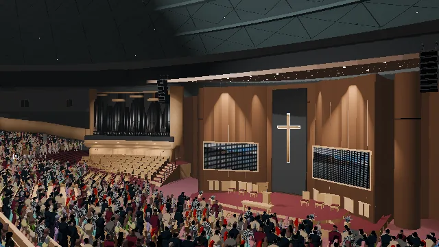
맵에 들어가는 시간을 잰 곳이 이 교회입니다. 이 사람들을 세우느라 멈췄던 거고요.
디스크도 치웠습니다. 검증할 때마다 찍어둔 캡처와 로그가 몇 달 동안 쌓여 있었고, 도시를 조각낸 미리보기 파일 2,813개가 빌드할 때마다 1,400개씩 새로 바뀌면서 커밋을 어지럽히고 있었습니다. 게임패드 아이콘 팩도 실제로 쓰는 건 세 종류뿐인데 5,504개가 통째로 들어와 있었고요. 이런 걸 정리하고 나니 Godot 편집기가 켤 때마다 훑는 파일이 19,734개에서 10,855개로, 거의 절반이 됐습니다.
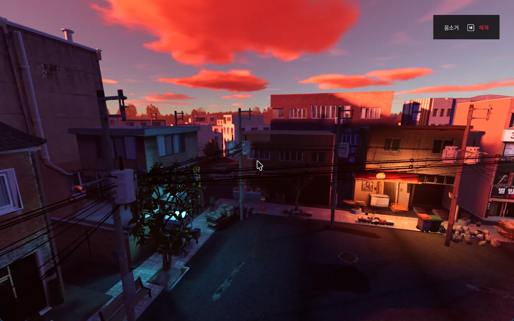
노을 진 동네. 이런 하늘을 보려고 하는 일입니다.
중간중간 숨 돌릴 때는 모션 캡처 자료를 찾으러 다니고, 실사 사진으로 텍스처를 입히는 작업을 했습니다. 군중 캐릭터들 옷을 굽는 도구도 프로젝트 밖에 따로 굴러다니던 걸 이번에 저장소 안으로 들였습니다. 한 번 실행하면 굽기부터 검사까지 끝나서, 외형 11종을 다시 구워도 실패가 하나도 안 났습니다.
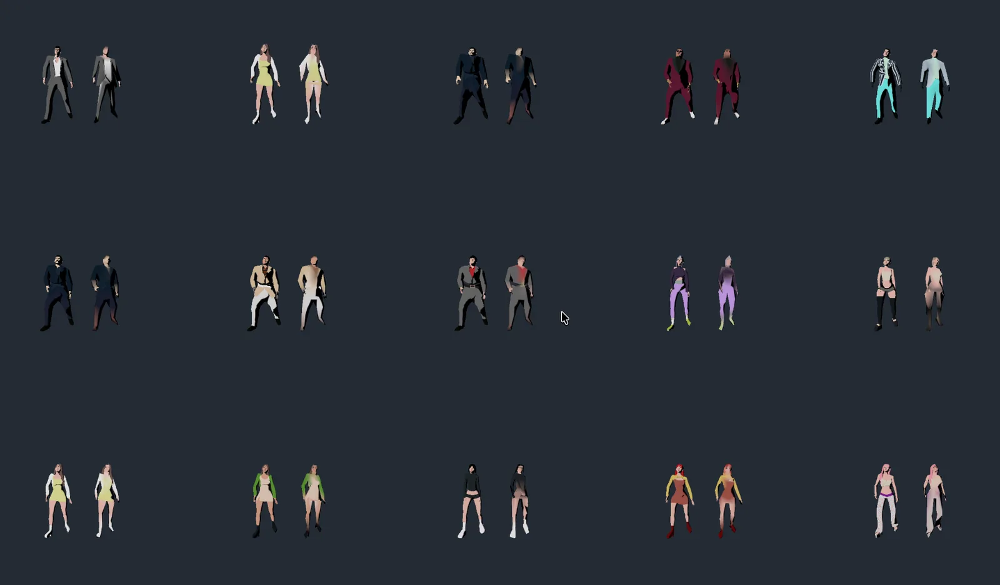
군중 외형마다 원본(왼쪽)과 멀리서 쓸 간략화 모델(오른쪽)을 나란히 놓고 확인합니다.
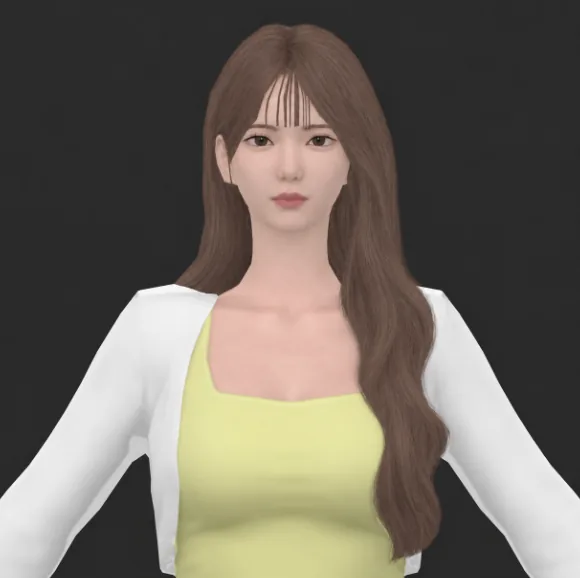
실사 사진으로 텍스처를 입혀본 캐릭터.
- 맵 진입 멈춤 원인 정리(메뉴 미리 읽기, 군중 정렬 제거, 군중 배치를 세 프레임으로 나눔) - 교회 첫 진입 16.2초 → 12.6초, 재진입 10.4초 → 6.7초 - 군중 전투 몸체 준비 비용 28~49ms → 0.25ms, 무한 로딩 경로 수정 - 쌓인 검증 산출물 정리, 편집기 스캔 대상 19,734 → 10,855개 - 리그·군중 굽기 도구 저장소 편입 - 실사 텍스처 작업, 모션 캡처 자료 수집
만드는 건 재미있고 치우는 건 재미없는데, 안 치우면 다음 걸 못 만든다는 걸 매번 이렇게 몸으로 배웁니다. 그럼 다음에 또...
싸움 하나에서 조직 하나로
지난 글이 "한 대 때리는 맛"에 관한 이야기였다면, 이번 사흘은 판을 키운 이야기입니다. 쓰러뜨린 상대를 부하로 거두는 것까지는 지난번에 만들었는데, 거둔 부하로 뭘 하느냐가 비어 있었거든요. 그래서 점령전을 만들었습니다.
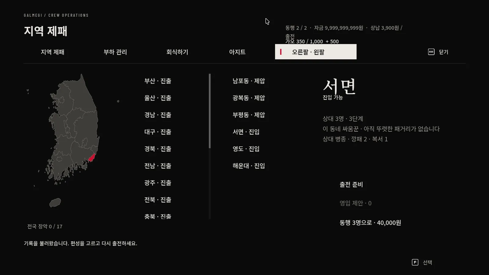
남포동, 광복동, 부평동까지 먹었고 다음은 서면입니다. 오른쪽 위 자금은 테스트용이에요.
남포동에서 시작해서 지도를 한 칸씩 먹어 들어가는 방식입니다. 구역을 고르고, 데려갈 부하를 고르고(처음엔 두 명, 키우면 여섯 명까지), 같이 싸우거나 뒤에서 지켜봅니다. 이기면 그 구역이 내 색으로 칠해지고, 쓰러뜨린 상대 중에 쓸 만한 놈은 데려옵니다.
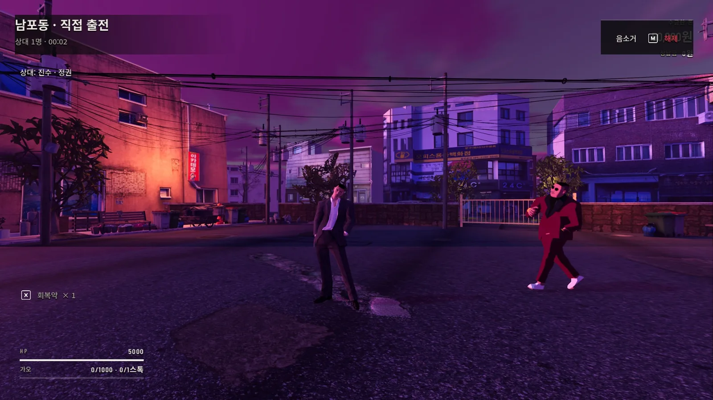
남포동, 첫 구역.
지면 쓰러진 부하는 그대로 죽습니다. 명단에는 흑백 영정이랑 국화 한 송이가 남고요. 이걸 넣고 나니 부하를 아무렇게나 던져 넣지 않게 되더라고요. 저부터 그랬습니다.
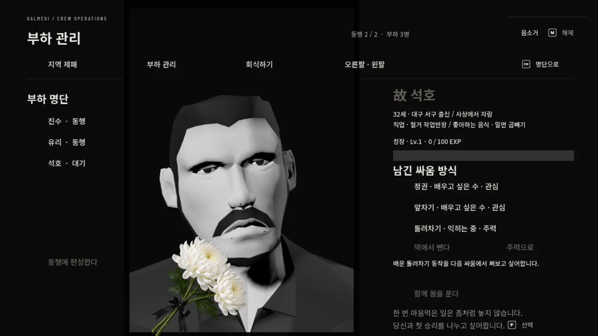
정벌에서 쓰러진 부하는 이렇게 남습니다.
싸움마다 진흙탕 같은 전장 조건이 14가지 중에 붙고, 권역마다 우두머리가 들고 나오는 수법이 10가지 있습니다. 나한테 진 놈이 원한을 품고 다시 찾아오기도 하고, 몇 번 엮이면 숙적이 되기도 합니다. 만들면서 한 가지 무조건 이기는 방법을 찾아버려서, 그걸 막는 데 하루를 더 썼습니다.
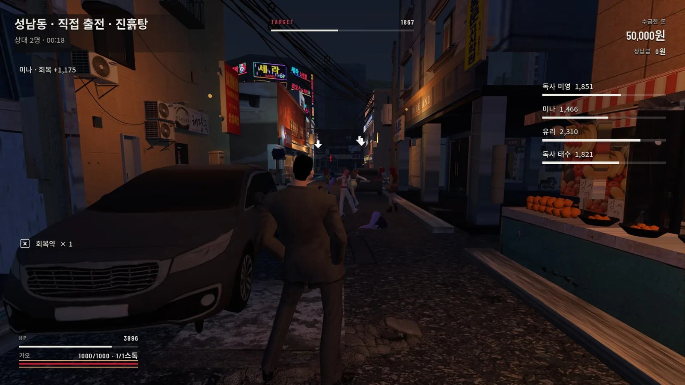
직접 출전하면 부하들 체력이 오른쪽에 같이 뜹니다. 이번 전장 조건은 진흙탕.
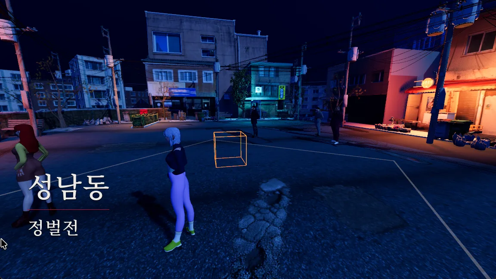
정벌전 시작. 동네 이름이 뜨고 부하들이 따라 들어옵니다.
그리고 엑셀 방송. 인터넷 방송에서 후원 순위대로 BJ들 자리를 줄 세우는 그 방송 맞습니다. 조직 돈벌이로 방송국을 굴린다는 설정인데, 커밋 제목에 썼듯이 이건 점점 "도파민 중독 모드"가 되어가고 있습니다. 숫자가 올라가고, 채팅이 터지고, 순위가 바뀌는 걸 보고 있으면 만드는 저도 손을 못 떼겠더라고요. 노래방에 펀칭머신 미니게임도 하나 들어갔습니다. 아직 펀칭머신 쳐서 뭐가 되는지는 안 정했고, 일단 치는 맛만 있습니다.
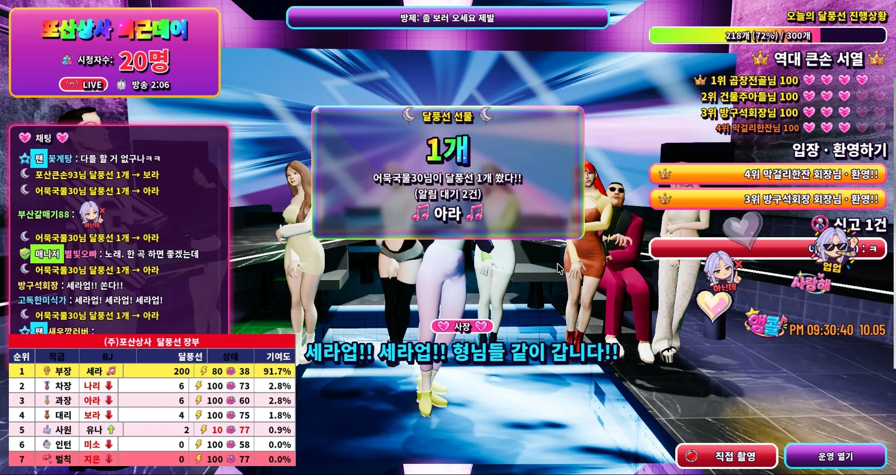
엑셀 방송. 후원은 달풍선으로 합니다.
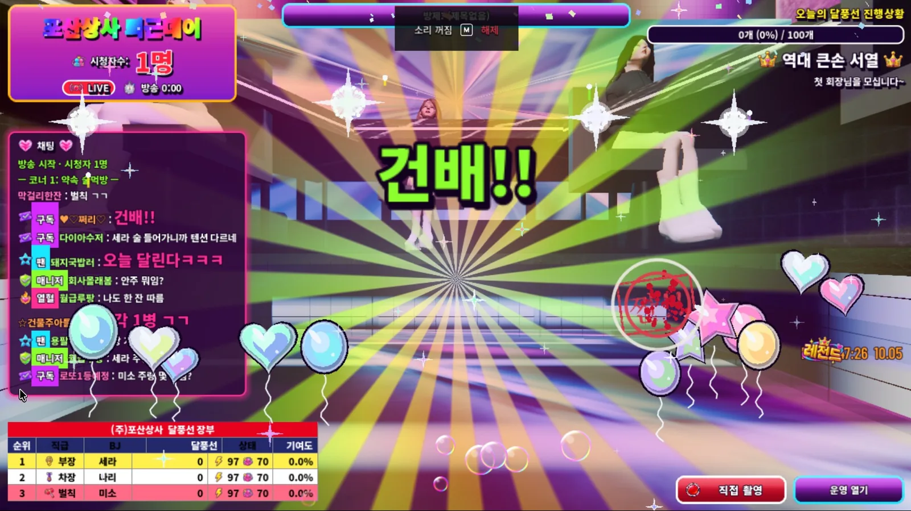
건배!! 이 모드는 일부러 이렇게 정신없게 만들고 있습니다.
작은 것들도 꽤 들어갔습니다. 동네에서 벌인 싸움을 누가 봤으면 그게 소문이 되는데, 공중화장실에 들어가 있으면 그 소문을 엿들을 수 있습니다. 내 얘기를 뒤에서 하는 걸 듣게 되는 거죠. 지하철은 이제 진짜로 탑니다. 왕복으로 다니고, 문이 열리고, 승객이 타고 내립니다.
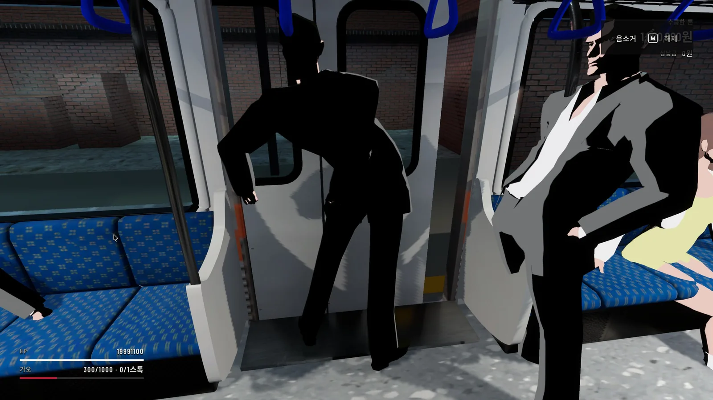
객실 안 풍경. 정장 차림으로 타면 이렇게 보입니다.
편의점에서 장도 보고, 병째 들이켜는 동작은 모션 캡처로 넣었습니다. 배경음악은 AI랑 FL Studio를 연결해서 같이 만들어보는 중입니다. 그래픽 옵션에 후처리 효과 켜고 끄는 것도 추가했고요.
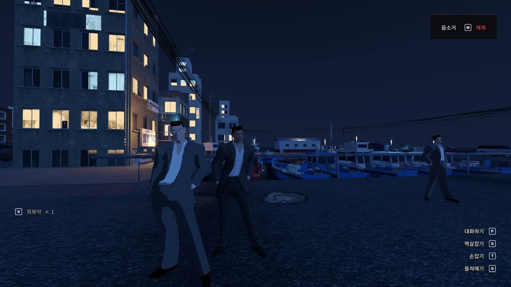
새로 생긴 항구 전장.
- 점령전: 지도·출전 편성(동행 최대 6명)·관전·결산·영입, 영구 사망과 영정 - 전장 조건 14종, 우두머리 수법 10종, 원한·설욕전, 숙적, 소지품 30종과 고물상 - 정벌 전장 추가: 상업 거리, 시장 광장, 항구, 밤골목 - 엑셀 방송 모드 대확장, 펀칭머신 미니게임, 이모티콘 - 소문·뒷담 시스템(공중화장실에서 엿듣기) - 가오 시스템 개편(평판 상처·회복·목격), 기술 상점 - 지하철 탑승, 편의점 장보기, 무기 뽑기, 병 마시기 모캡 - FL Studio 연동 작곡, 그래픽 옵션 후처리, 자동 카메라 개편
이제 주인공이 혼자 싸우는 게임에서, 사람을 모으고 잃는 게임이 되어가는 것 같습니다. 그럼 다음에 또...
한 대 때리는 맛
지난 글 뒤로 붙잡은 주제는 딱 하나, 때리는 게 재밌냐였습니다. 커밋 메시지에는 "전투 도파민 연구"라고 적어놨더라고요. 잘 만든 액션 게임들을 한참 돌려보면서, 한 대 칠 때 화면에서 뭐가 일어나는지 프레임 단위로 뜯어봤습니다.
그래서 들어간 것들입니다. 상대가 주먹을 준비하는 순간에 먼저 치면 '카운터', 휘두르는 도중에 치면 더 세게 들어가는 '퍼니시 카운터'가 됩니다. 회피는 누른 직후 0.15초 안에 피하면 저스트 회피가 되고, 그 직전에 상대 눈이 번쩍하면서 예고를 줍니다. 상대가 큰 걸 헛치면 몸에 금빛 틈이 생기는데, 거기를 치면 상대가 휘청이는 '코마' 상태가 됩니다. 약점을 세 번 더 치면 터지면서 滅 도장이 찍히고요. 도망가는 놈 등에 한 대 더 넣는 추격타도 생겼습니다.
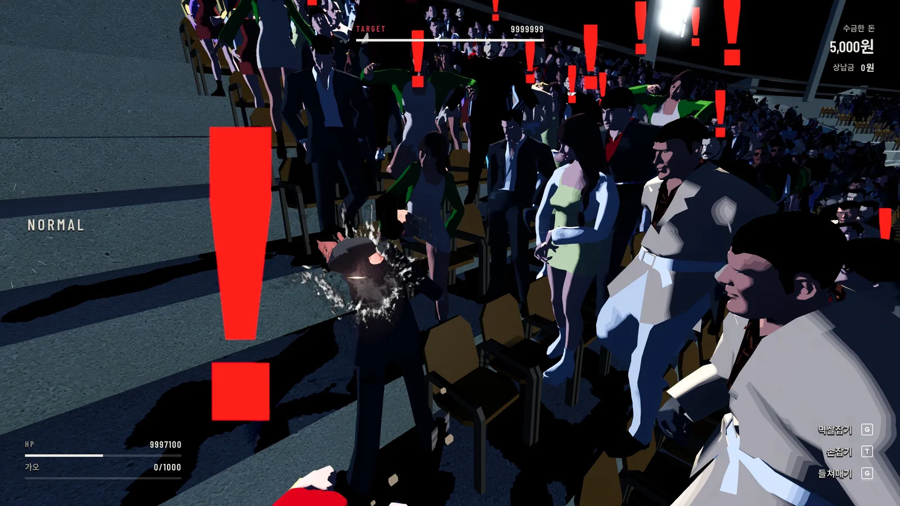
야구장 관중석 한가운데서 한 대. 주변 사람들이 놀라서 돌아봅니다.
맞는 쪽도 손봤습니다. 이제 맞은 부위를 손으로 감싸고, 다리를 맞으면 다리가 제대로 꺾입니다. 가오를 걸어 돈을 뜯는 '삥뜯기'도 다듬었는데, 털린 상대는 그 뒤로 굽신거리는 '쫄 모드'가 됩니다. 거기서 한 대 더 치면 남은 돈 다 뱉고 도망가요. 이게 생각보다 재밌어서, 쫄아 있는 놈을 어디에 써먹을지 한참 고민했습니다.
그리고 쓰러뜨린 상대를 부하로 거두는 '동료가 되라' 모드를 만들었습니다. 영입하고, 정벌 보내고, 같이 회식하고, 잘못되면 죽기도 합니다. 이게 다음 글의 점령전으로 이어집니다.
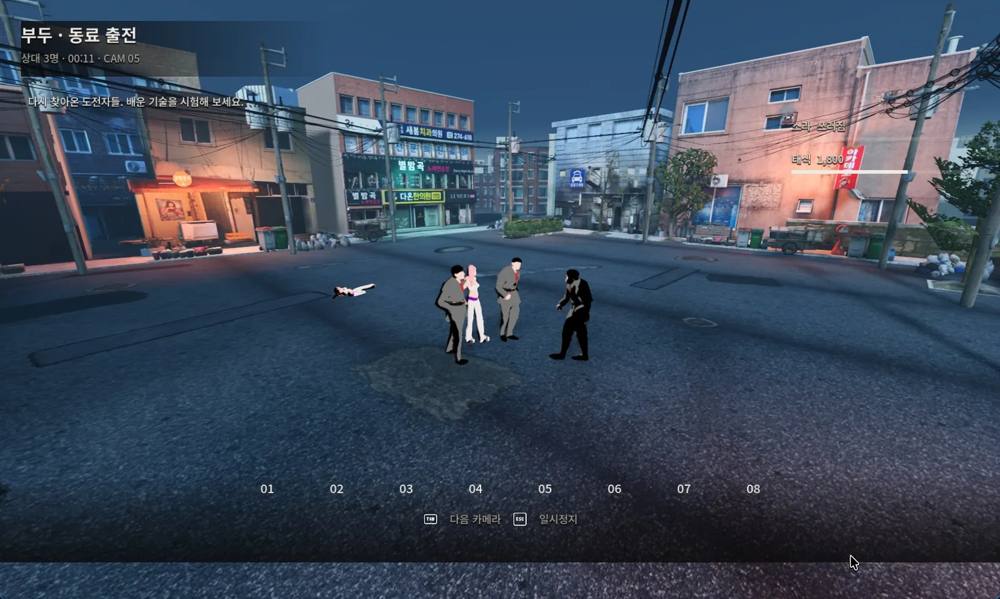
부하들만 내보내고 카메라를 돌려가며 지켜볼 수도 있습니다.
싸우는 도중에 문을 걷어차고 증원이 쏟아져 들어오는 장면도 만들었고, 그런 연출을 모아서 한 번에 돌려볼 수 있는 뷰어도 하나 만들었습니다. 사건을 블록처럼 짜 맞추는 시퀀스 편집기도 '미션 메이커'로 키웠습니다. 앞으로 미션은 전부 이걸로 만듭니다.
새 기능을 넣을 때마다 게임은 무거워져서, 사이사이 최적화도 계속했습니다. 9월 30일 커밋에 "최적화 짬처리는 계속해서 10시간 넘게 하는 중"이라고 적혀 있는데, 실제로 그랬습니다. NPC들이 멀어지면 간단한 모델로 바뀌어야 하는데, UV가 엉켜 있어서 엔진이 단순화를 제대로 못 하던 걸 UV를 펴서 해결하기도 했고요.
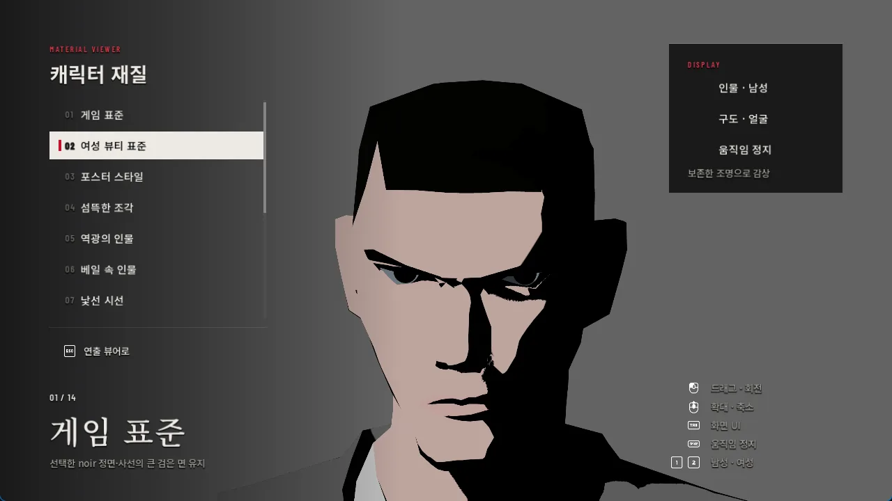
캐릭터마다 제각각이던 재질을 하나로 맞추면서 비교용 뷰어도 만들었습니다.
- 카운터·퍼니시 카운터, 저스트 회피와 예고 섬광, 추격타 - 코마 피니시(금빛 틈 → 코마 → 약점 3회 → 滅) - 피격 부위 보호 반응, 피격 다리 IK 개선 - 삥뜯기 개선과 쫄 모드 - 동료 영입·정벌·회식·사망 - 적 난입 시퀀스, 연출 뷰어, 뮤직 플레이어 - 시퀀스 편집기 → 미션 메이커, 사건 분류표 - 교회·야구장 맵 작업, NPC LOD 개선, 캐릭터 조명·재질 통일
아직 "재밌다"고 말하긴 이르지만, 적어도 때릴 때 손이 심심하지는 않게 됐습니다. 그럼 다음에 또...
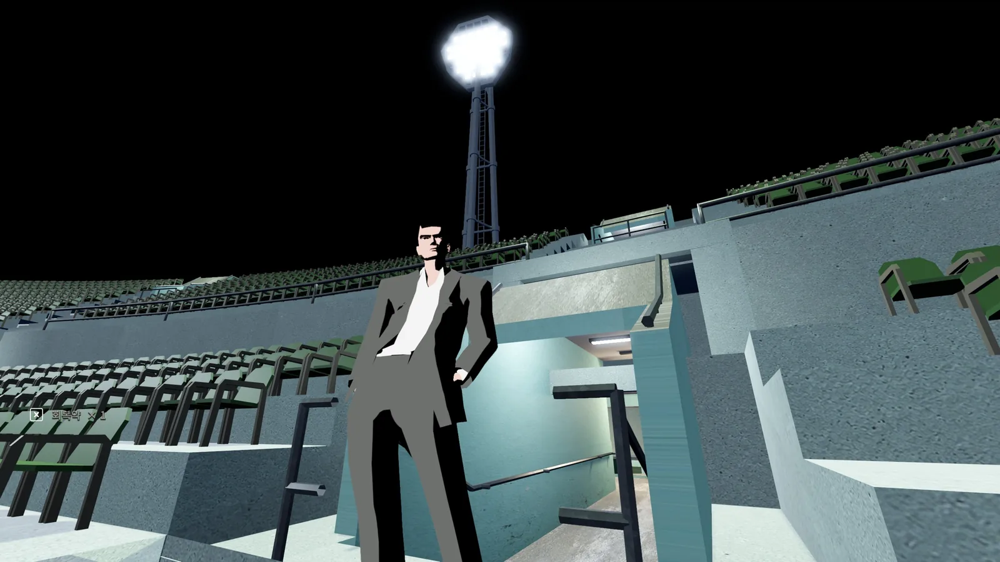
밤 야구장. 싸움이 끝나면 이런 데서 담배 한 대 피웁니다.
계단을 내려가는 데 열흘
지난 글을 올리고 열흘이 지났습니다. 오늘 커밋 제목이 "뭔가 많은일이있었음..."인데, 정말 그랬어요. 다만 대부분은 화면에 안 보이는 일이었고, 눈에 보이는 건 결국 계단 하나입니다.
그동안 이 게임의 계단은 사실 계단이 아니었습니다. 계단 위에 눈에 안 보이는 경사로를 덮어두고, 그 위로 미끄러뜨리고 있었거든요. 대부분의 게임이 이렇게 합니다. 싸고 잘 되니까요. 그런데 이 게임은 지하철역, 골목, 건물 지하실이 무대라 계단을 정말 자주 밟습니다. 주인공이 계단을 스르륵 미끄러져 내려가는 걸 몇 달 보다 보니 더는 못 참겠더라고요.
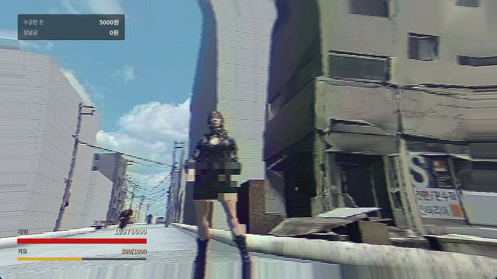
결국 이 골목을 제대로 걸어 다니게 하려고 하는 일들입니다.
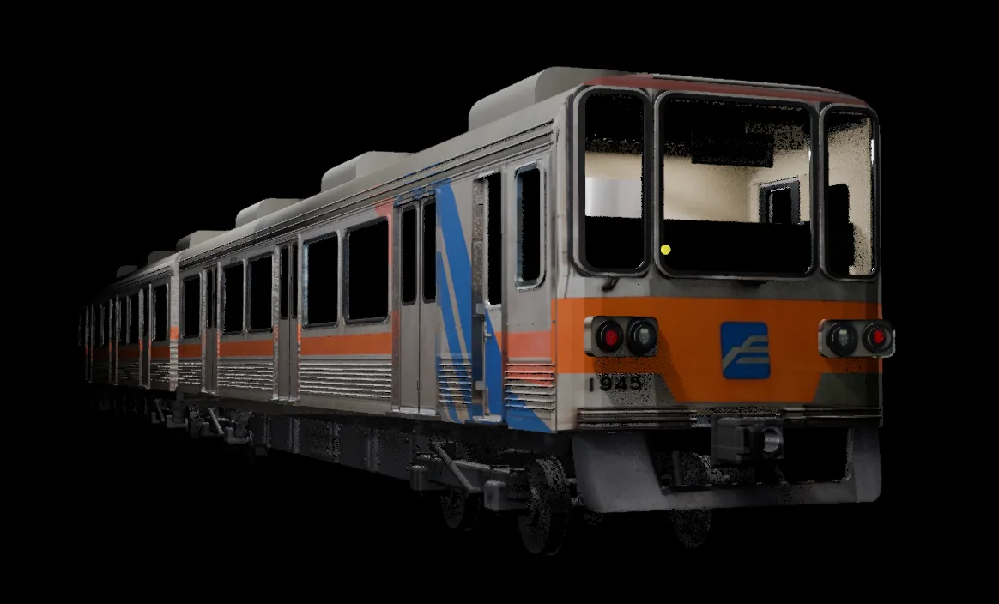
역만 있고 열차가 없으면 섭섭하니까요.
그래서 경사로를 걷어내고 진짜로 한 단씩 밟게 바꿨습니다. 해보니 올라가는 것보다 내려가는 게 훨씬 어렵습니다. 올라갈 땐 발 디딜 곳이 눈앞에 있는데, 내려갈 땐 허공에 발을 내밀고 바닥이 닿을 때까지 기다려야 하거든요. 그동안 몸이 뻣뻣하면 로봇 같고, 너무 풀어두면 굴러떨어집니다. 그래서 발이 닿는 순간, 체중이 앞발로 넘어가는 타이밍, 거기에 맞춰 상체가 풀리는 정도를 하나씩 따로 맞췄습니다.
확인용으로 코스 21개짜리 연습장도 만들었습니다. 높이 2m짜리 큰 계단부터 0.51m 쓰레기통, 0.30m 보도블록 턱까지요. 양복 입은 남자가 쓰레기통 위에 올라가 서 있는 걸 스무 번쯤 보고 있으면 좀 웃깁니다.
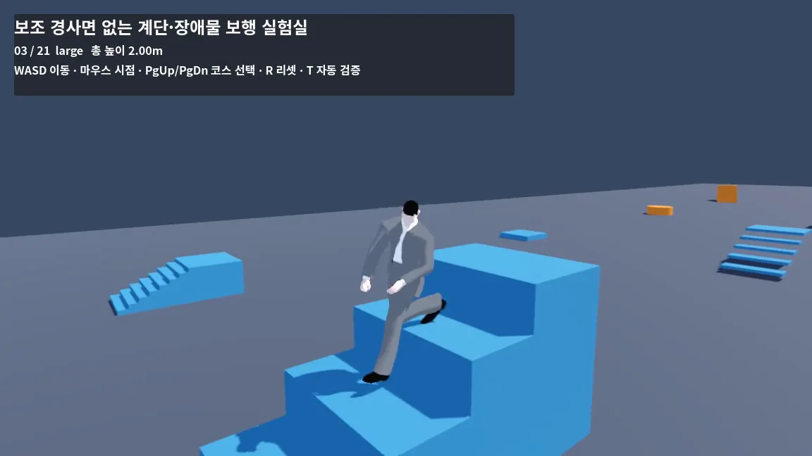
경사로 없이 진짜 단을 밟고 내려갑니다. 여기까지 열흘.
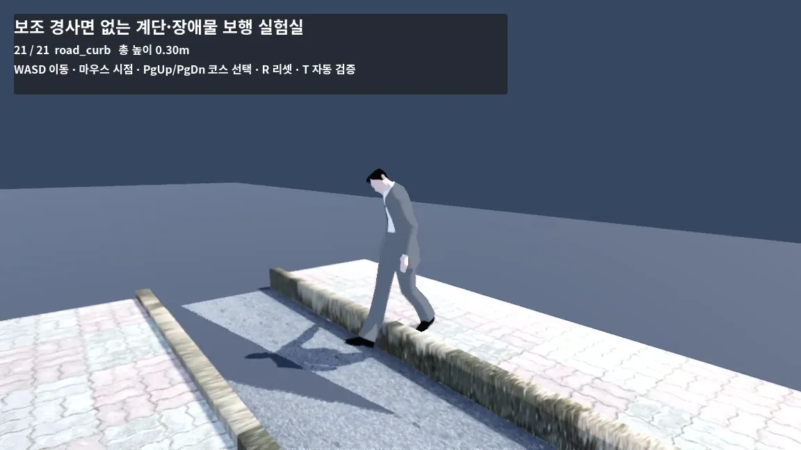
30cm 보도블록 턱. 코스 21개 중 실제로 제일 자주 밟게 될 높이입니다.
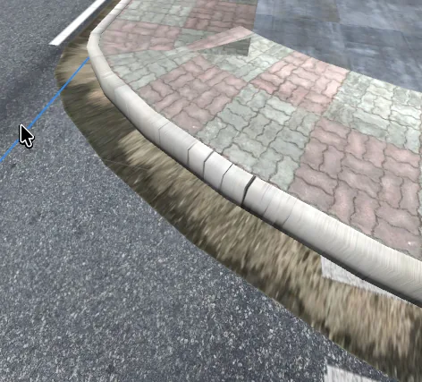
연습장을 나오면 이런 걸 밟게 됩니다.
그리고 지난 글에서 자랑했던 걸 일주일 만에 걷어냈습니다. 9월 9일 글에서 AI 도구 얘기를 길게 했었죠. 쓸 때는 진심이었습니다. 그런데 9월 17일 커밋 제목이 "아스트라 놀이 끝 mcp 걷어내고 이란 다시 체계화부터..."입니다. Blender로 간접광을 구워 오던 애드온(576줄)도 통째로 지웠고요. 도구를 5분 만에 만들 수 있는 것과, 그걸 계속 관리할 수 있는 건 다른 문제더라고요. 일주일 사이에 제가 이해 못 하는 것들이 프로젝트에 너무 많이 쌓여서, 그걸 다시 걷어내는 데 또 며칠이 걸렸습니다. 그중 하루의 커밋 제목이 "다이어트"입니다.
오랜만에 성능도 제대로 재봤습니다. 도시 한 블록에 걷는 사람 100명, 차 26대, 캐릭터 8명을 세워놓고 재보니 한 프레임에 평균 3.30ms가 걸렸습니다. 그중 그래픽(GPU)이 1.18ms, 물리 계산(CPU)이 2.41ms였어요. 그래픽이 아니라 물리가 무거웠던 거죠. 그동안 조명이랑 그림자를 깎고 있었는데, 엉뚱한 데를 파고 있었던 겁니다.
더 놀란 건 로딩이었습니다. 게임을 켜고 레벨을 읽기 시작할 때까지 7.9초가 걸리는데, 정작 레벨 파일을 읽는 건 2.3초면 끝납니다. 앞의 7.9초는 엔진이 켜지고, 게임 시작할 때 자동으로 뜨는 스크립트 열일곱 개가 하나씩 준비되는 시간이에요. 그동안 화면엔 아무것도 없고요. 한 프레임을 1ms 줄이겠다고 며칠을 썼는데, 플레이어가 제일 오래 기다리는 시간은 재본 적도 없었습니다.
지난 글 끝에 "성능이 이상하면 코드보다 내 책상부터 치우자"고 썼는데, 이번에도 책상이 문제였습니다. 켜둔 프로그램들이 달라는 메모리를 합쳐 보니 컴퓨터에 달린 램보다 훨씬 많았어요. 모자란 만큼 디스크를 램 대신 쓰고 있었으니 끊길 수밖에요. 제일 많이 먹는 건 Godot 편집기(8.3GB)였는데, 메모리가 새는 게 아니라 제가 씬 탭을 열 개나 열어둔 탓이었습니다. 편집기는 탭을 닫기 전까지 그 씬을 통째로 메모리에 들고 있고, 큰 맵 하나가 기가바이트 단위거든요. 프로파일러를 켤 게 아니라 탭부터 세어봤어야 했습니다.
나머지 시간은 손으로 하던 귀찮은 일을 자동으로 돌리는 데 썼습니다. 캐릭터 뼈대 검사를 자동으로 돌려서, 손가락 60개 위치를 하나하나 재고 점수를 매기게 했습니다. 도시에 깔린 에셋 362개도 크기별로 나눠서, 각각 몇 미터 밖까지 보일지 한 번에 정할 수 있게 했고요. 건물은 800m, 작은 소품은 50m, 아주 작은 디테일은 25m. 이런 건 만들 땐 재미없는데, 한 번 만들어두면 다시는 안 해도 됩니다. 열흘 동안 한 일 중에 제일 잘한 걸 고르라면 아마 이쪽일 겁니다.
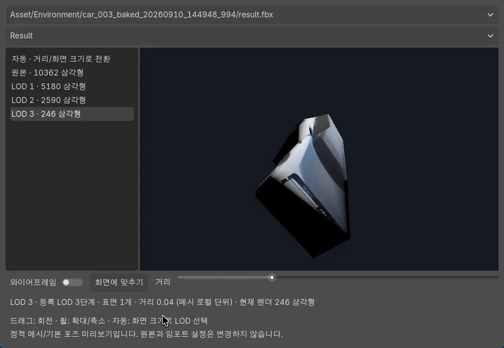
멀어지면 삼각형 1만 개짜리를 246개짜리로 바꿔 끼웁니다. 눈으로 확인하려고 만든 뷰어.
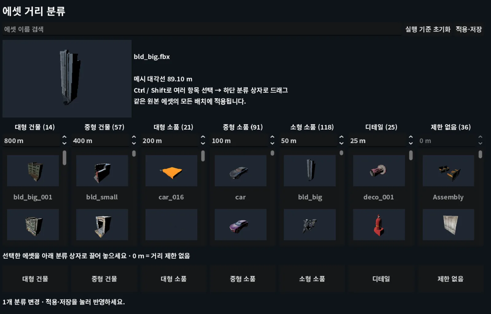
에셋 362개를 크기별로 나눠 몇 미터까지 보일지 정합니다. 손으로 하면 하루 걸립니다.뼈대 검사를 자동으로 돌린 결과. 손가락 60개를 일일이 재서 점수를 매깁니다.
- 보조 경사로 없는 계단·턱 보행으로 교체, 내려갈 때 착지·체중 이동·상체 풀림 보정 - 코스 21종 보행 연습장과 자동 검사 추가 - 몸이 출렁이는 효과를 그래픽 카드 쪽으로 옮김 (2.53ms → 0.29ms) - 군중 처리·NPC 절전·끊김 감시 다시 작업 - 외부 AI 연동 도구 일괄 제거, 안 쓰는 파일·에셋 정리 - 휴대폰 얼굴 캡처와 영상 모션 캡처를 리깅 작업에 연결 - 모델 뷰어와 외형 정리, 캐릭터 조명 다시 작업 - 도시 블록 성능 실측과 로딩 구간 측정 도구 추가
다음 글에서는 계단 말고, 계단을 내려가서 만나는 것들 얘기를 할 수 있으면 좋겠네요. 그럼 다음에 또...
이런 걸 만들고 있을 때가 제일 즐겁습니다.
뼈대를 갈아엎고, 넘어져도 혼자 일어나게
지난 글을 올리고 이틀이 지났습니다. 커밋 기록을 다시 보니 "진짜 대격변할거임 스켈레톤", "대격변 2" 같은 게 줄줄이 있네요. 저런 제목을 적는 날은 보통 뭔가 크게 부수는 날입니다. 이번엔 캐릭터 뼈대였어요.
그동안 NPC마다 뼈대를 심은 방식이 제각각이라, 다리가 엉뚱한 뼈에 붙어 있거나 어깨를 움직이면 몸통까지 같이 끌려가는 애들이 섞여 있었습니다. 평소엔 티가 안 나다가, 맞고 축 늘어지는 순간(랙돌)에 관절이 꺾이면 안 되는 방향으로 꺾입니다. 그래서 보스랑 블로커는 몸을 통째로 다시 뽑고, 어깨와 골반이 끌고 가는 범위를 원래 체형에 맞게 다시 잡았습니다. 중간에 사고도 여러 번 났습니다. 아래 얼굴 터진 사진처럼요.
뼈대를 갈아엎는 도중. 이런 걸 수십 번 봤습니다.정리를 마친 NPC들. 이제 뼈대가 전부 같습니다.
이번 이틀의 제일 큰 수확은 넘어진 캐릭터가 혼자 일어나는 것입니다. 일어나는 애니메이션을 재생하는 게 아니라, 축 늘어진 물리 상태 그대로 힘을 줘서 일어납니다. 엎드린 채로 손을 짚고, 한쪽 무릎을 당기고, 발을 딛고, 골반을 들고, 섭니다. 단계는 시간이 지나서 넘어가는 게 아니라, 실제로 손이 바닥에 닿았는지, 무릎이 어디에 닿았는지를 보고 넘어갑니다. 중간에 막히면 반대쪽으로 다시 굴러서 팔다리를 풀고 재시도하는데, 최대 네 번까지 합니다.
랜덤한 방향으로 74번 떨어뜨려 봤더니 전부 일어나서 5초 동안 서 있었습니다. 다만 손이 순간적으로 초속 20m로 튀거나, 발이 바닥에 6cm쯤 박히는 프레임이 아직 남아 있어서 "성공률 100%"를 곧이곧대로 믿긴 어렵습니다. 그래도 쓰러진 놈이 꾸물꾸물 몸을 일으키는 걸 처음 봤을 땐 좀 소름 돋았어요.
여기서 다시 일어납니다. 애니메이션이 아니라 물리로.
도시도 구역으로 나눴습니다. 지상 도시랑 지하철역을 한꺼번에 다 들고 있으니 버거워서, 계단을 오르내릴 때 필요한 쪽만 읽고 반대쪽은 내려놓게 바꿨습니다. 계단을 왔다 갔다 하며 재보니 프레임이 26ms에서 17ms로 줄었고, 지하로 내려가면 그래픽 메모리 120MB가 비워집니다. 도로도 위성사진 위에 선을 긋는 방식으로 다시 깔았고, 그 도로를 그대로 신호등이랑 사람들이 걷는 길로 씁니다. 초록불에 차가 지나가고 그다음에 사람이 건너는, 그 당연한 장면 하나 만드는 데 손이 꽤 많이 갔습니다.
위에서 본 도시. 이걸 구역으로 나눠서 필요한 곳만 읽습니다.
조명은 요즘 제일 재미있게 하는 부분입니다. 벽이나 천장에 한 번 튕겨서 퍼지는 빛(간접광)만 Blender로 미리 계산해서, Godot에 다시 얹는 방법을 만들었습니다. 아래 지하철역 두 장이 같은 장면인데, 두 번째는 텍스처를 다 벗기고 빛만 남긴 겁니다. 붉은 천장 빛이 바닥까지 은은하게 번지는 그 느낌, 저는 이게 부산 지하철의 8할이라고 생각합니다.
간접광을 미리 계산해 넣은 지하철역.같은 장면에서 텍스처를 전부 벗긴 것. 빛만 남았습니다.
- 넘어진 랙돌이 물리로 일어나는 기능 새로 구현, 낙하 74가지 조건 검사 - 캐릭터 뼈대·스키닝 정리, 보스/블로커 외형 다시 뽑기, 뼈대 설정 덮어쓰기 검사 애드온 추가 - 지상 도시·지하철역 구역 나눠 읽기와 충돌 미리 굽기, 계단 왕복 성능 검사 - Blender 간접광 굽기 경로와 텍스처 UV 도구 추가 - 도로 스케치로 신호·보행 경로 만들기, 군중/차량 처리 변경 - 최고 난이도 협공 전투 연결, 지하철 실전 전투 자동 검사 추가
마지막으로, 오늘 커밋 제목은 "아마도 스트리밍 때문에 전투 렉이 아주 심하다"입니다. 결론부터 말하면 범인은 스트리밍이 아니었습니다. 언젠가 옵션 창에서 만져놓고 잊어버린 물리 계산 횟수가 설정 파일에 저장돼 있었고, 실행할 때마다 조용히 그 값으로 돌아가고 있었어요. 화면을 한 번 그릴 때마다 물리를 여덟 번씩 돌리고 있었던 셈입니다. 초당 60번으로 내리니 30ms가 11ms가 됐습니다. 덤으로, 다섯 시간 전에 띄워놓고 잊어버린 테스트 프로그램이 CPU 코어 두 개를 먹으면서 아직도 돌고 있는 것도 찾았습니다. 성능이 이상하면 코드를 의심하기 전에 내 책상부터 치워야 한다는 걸 또 배웠네요. 그럼 다음에 또...
결국 만들고 싶은 건 이런 장면입니다.
GPT 아스트라 등장, 1인 인디게임 개발의 혁명
부산 토박이 우당탕탕 액션 갈매기를 개발한 지 어언 반년이 되었습니다. 초여름에 권유를 받아 바이브코딩을 시작했는데, 사실 활용이 쉽지 않았습니다. 초심자일수록 통제 가능한 범위가 좁고, AI가 쓴 코드는 아예 구조조차 파악하기 힘들었기 때문입니다. 그 때문에 개발 속도가 오히려 꺾이기도 하고, 완전히 멘붕해버려 아트 작업에만 몰두하기도 했습니다. 그러다 서서히 익숙해질 무렵 아스트라를 사용할 수 있게 되었네요. 예상했던 것보다 훨씬 탁월한 능력을, 초심자도 완전히 컨트롤할 수 있도록 도와주는 것 같습니다. 개인적으로 1인 개발하면서 가장 괴로웠던 부분은 툴을 만드는 것이었는데요. 플러그인, 애드온부터 시작해 맵이나 시퀀스를 자동화하고 파이프라인을 꾸리는 것, 데이터를 추적해 관리하거나 코드로 그런 '지도'를 쌓아가는 것이 너무도 버겁게 느껴졌습니다. 하지만.. 추론 능력이 뛰어난 AI는 확실히 다르네요. 애드온을 전전하며 맘에 드는 효과를 내기가 불가능에 가까워 보였던 도로 자동화 툴이나, 전투를 반복 학습시켜서 적 AI를 업데이트하는 기능 등 그야말로 글로 적기만 하면 5분 만에 새로운 툴을 만들어 주니 개발에 탄력이 붙습니다.
애드온을 전전하다 포기했던 도로 자동화 툴. 점을 찍으면 도로가 깔립니다.
모델링도 확실한 개선이 느껴집니다. 특히 기존 Meshy나 Hunyuan 같은 툴에서 속이 꽉 찬 (..) 50만 버텍스 모델을 들고 멘붕해보신 분들이라면, 아스트라가 얼마나 게임 친화적인 로우 폴리 모델을 뽑는지 체감하실 수 있다고 생각합니다.
미용실.노래방.대예배당.야구장.
이런. 말투가 왠지 약 파는 사람처럼 돼버렸네요. 존댓말로 쓰니 왠지 더 어색한 문장이 이어집니다. 어디선가 본 말투 같달까요(웃음) 어쨌든, AI 칼럼니스트가 아니고 게임 만들려고 용쓰는 입장이니, 작업 내용을 남깁니다.
- 전투·NPC·도플갱어 정책과 전투 테스트 환경 추가 및 변경 - 불·연기·비·수면 VFX와 관련 재질·셰이더 변경, 검증 도구 추가 - 카메라·애니메이션·군중 처리 및 관련 검증 코드 변경 - 레벨·환경 에셋 변경과 도로 편집 애드온 추가 - 프로젝트 구조 문서와 관련 작업 문서 갱신
불·연기 효과를 얹은 지하철역 난투.
역시나 문제는 재미 요소인데요. 이 게임의 재미는 물론 액션으로 뒷받침되어야겠지만, 반복적인 전투를 수행하는 비트엠업으로 그 탄력을 계속 이어나가는 것은 제 역량으론 무리라고 생각됩니다. 대신 스스로 잘할 수 있다고 생각되는 분위기, 장소의 현장감을 연구하고 있습니다. 모션, 색감, 환경음, 이런 감각적인 요소들 말이죠. 그런 것들을 특출나게 잘하는 게임들이 가끔 보이는데, 개인적으로 그런 대리체험 혹은 몰입 가능한 세계로서, 게임을 가장 즐기는 것 같습니다.
이런 거리의 공기를 만들고 싶습니다.지하철 승강장."어이, 거 잠깐 서 보소."
글이 너무 길어졌네요. 그럼 다음에 또...
혼자 서는 법부터 다시
사이트를 열어놓고 열흘 동안 글을 못 썼습니다. 핑계를 대자면, 8월 하순 내내 캐릭터 몸 움직임에 매달려 있었어요. 먼저 던지기랑 벽꽝, 이즈나 드롭을 넣었습니다. 상대를 붙잡아서 머리부터 바닥에 꽂는 그 기술이요. 사람이 유리창을 뚫고 나가야 하니까 유리 파편도 같이 만들었습니다. 그다음은 파쿠르와 클라이밍입니다. 턱을 짚고 올라가고, 벽을 타고, 3단 대시로 내달리는 것까지요. 도시가 넓어지니까 결국 이동이 재미없으면 다 재미없더라고요.
그러다 이족보행 로봇에 빠졌습니다. 8월 30일 하루에만 커밋을 열두 번 했는데, 제목이 "예쁘게 자빠짐", "4초 정도 버티는듯", "모르겠다 나도" 순서입니다. 사람 몸 관절마다 모터를 달아서 스스로 균형을 잡게 해보는 실험이었는데, 결론부터 말하면 지금 물리 설정(초당 60번 계산)으로는 원리상 못 섭니다. 발이 땅을 딛고 반응하는 건 그것보다 훨씬 빨리 일어나거든요. 대신 그 과정에서 얻은 '발을 어디에 디딜지' 규칙은 캐릭터 다리 움직임(IK)에 옮겨 넣었습니다. 덕분에 맞고 넘어지는 건 확실히 좋아졌어요.
맞으면 몸이 물리로 접힙니다. 맞는 쪽만큼은 확실히 좋아졌습니다.
지하철역도 짓기 시작했습니다. 부산 지하철 특유의 주황색 격자 천장, 사실 진짜로 울퉁불퉁하게 만든 게 아니라 평평한 판에 깊이가 있는 것처럼 보이게 속인 재질(패럴랙스)입니다.
주황색 격자 천장은 진짜 요철이 아니라 속임수입니다.
그리고 군중. 수천 명을 한 번에 세워놓고 프레임을 재봤습니다. 사람이 많아야 도시 같아 보이는데, 사람이 많으면 프레임이 떨어집니다. 이 싸움은 아마 끝까지 갈 것 같아요.
사람이 많아야 도시 같은데, 사람이 많으면 프레임이 떨어집니다.
- 가오 시스템 밸런싱과 결투 진입, 던지기·벽꽝·유리 파편 - 이즈나 드롭, 파쿠르·클라이밍·3단 대시, 다리 IK와 무릎 보정 - 액티브 랙돌 도입, 이족보행 균형 실험(실패, 규칙만 옮김) - 지하철역 블록아웃, 인파 셰이더 굽기, 군중 부하 측정 - 노래방·고시원 실내 맵, 카메라 게이트, 블렌더 뷰포트 애드온
그럼 다음에 또...
이런 빛을 만들고 싶어서 계속 파는 중입니다.
갈메기 사이트 개설
인디 게임 개발을 시작한 지도 벌써 1년여가 되었습니다. 애지중지 길러오던 [한국형 누아르 액션 갈메기]도 슬슬 게임같은 모양새가 되어가고 있기 때문에!! 재미있는 일들도 많이 생기고 남기고 싶은 일들도 많습니다. 매일의 작업에 의미를 더하고 또 루틴으로 잘 보관해보고자, 독립된 사이트를 개설하여 운영하고자 합니다. 아직 열심히 개발중이기 때문에 내용도 두서없고 아마 실없는 내용이 대다수일거라고 예상합니다만, 그럼에도 함께 즐겨주시면 더할 나위 없이 기쁠 것입니다. 그럼 잘 부탁드립니다.
게임에 이름이 생겼습니다
8월 초에 잠깐 팀으로 작업해본 적이 있습니다. 혼자 붙잡고 있던 프로젝트를 남한테 열어주는 게 이렇게 정신없는 일인 줄 몰랐네요. 제일 먼저 한 일은 이름 붙이기였습니다. 제목을 Sam in Busan으로 바꾸고, 타이틀 그림을 시작 화면에 걸었습니다. 주인공한테 이름이 생기니까 갑자기 게임 같아 보이더라고요.
이름이 생긴 남자.
이때 웹 브라우저에서도 돌아가게 만들었습니다. 클릭 한 번으로 열리는 데모가 있어야 남한테 보여줄 수 있으니까요. 그런데 이 웹 빌드가 사람 잡습니다. 처음 뽑은 게 1.4GB였어요. 게임이 아니라 영화 한 편 용량이죠. 텍스처 해상도를 줄이고, 이미지를 압축하고, 안 쓰는 에셋을 빼고, 미리 한 번 더 압축(gzip)해서 678MB까지 줄였습니다. 그래도 크긴 한데, 일단 열리긴 합니다. 어차피 기다려야 하니까 로딩 화면에 스토리랑 조작법이라도 넣어뒀습니다.
이 시기에 만든 것 중 제일 마음에 드는 건 'Y2K 감자 필터'입니다. 화면을 일부러 저해상도로 뭉개서 2000년대 초 게임처럼 보이게 하는 건데, 이거 켜놓고 한참 놀았습니다. 결국 기본으로는 안 켰지만요.
Y2K 감자 필터. 쓸모는 없지만 즐거웠습니다.
- 게임 제목 변경, 타이틀 그림과 시작 화면, 스테이지 선택과 로딩 화면 - 웹 버전 지원과 용량 줄이기(1.4GB → 678MB), 웹 배포 - 해변 보스전, 동료 시스템, 목격자 AI(행패를 본 NPC의 반응) - 효과음 라이브러리, 애니메이션 LOD, 입력 캐싱 - 해변 엔딩 내레이션과 자동 저장, 시퀀스 연출
그럼 다음에 또...
얼굴은 여전히 손으로 팝니다.
비 만드는 데 일주일을 썼습니다
7월 말부터 계속 물이랑 씨름했습니다. 시작은 침수였습니다. 물이 차오르고 사람이 빠지는 것. 그다음이 파도, 그다음이 비, 그다음이 폭풍우입니다.
파도. 여기까지 오는 데 며칠이 걸렸습니다.
비는 만만하게 봤다가 크게 당했습니다. 떨어지는 빗방울은 반나절이면 그리는데, 그게 바닥에 튀는 순간부터 지옥입니다. 튀는 자리가 다 똑같으면 무늬를 찍어놓은 것 같고, 완전히 무작위로 하면 이번엔 비 같지가 않아요. 커밋 기록에 "비 튀는 위치 다양화" 한 줄로 남아 있는데, 그 여덟 글자에 하루가 들어 있습니다.
비와 안개. 이 그림 하나 보려고 일주일을 썼습니다.
셰이더는 여전히 강의 영상을 틀어놓고 따라 치면서 배웁니다. 이론을 제대로 배운 적이 없어서, 원하는 그림이 나올 때까지 숫자를 이리저리 돌려보는 식이에요. 비효율적이긴 한데, 가끔 우연히 예쁜 걸 건진다는 장점이 있습니다.
밤 해변. 색으로 분위기를 잡는 연습.
도구도 몇 개 만들었습니다. 전깃줄을 자동으로 늘어뜨려 주는 애드온, 에셋을 땅 모양에 맞춰 뿌려주는 배치 도구, 그리고 깨진 파일 연결을 다시 이어주는 도구. 마지막 건 만들다가 한 번 되돌릴 수 없게 망가뜨려서, 백업부터 하고 다시 만들었습니다. 커밋 제목이 "불가역적 일단백업"인데, 그때 심정이 그대로 남아 있네요.
- 침수와 파도, 파도 마스크 굽기, 잠수 - 비 파티클과 폭풍우, 튀는 위치 다양화, 화면에 맺히는 빗방울 - 에셋 배치·전깃줄 자동화·깨진 연결 복구 애드온 - 경계 AI(들키면 경보), 정찰 시야, 시체 끌고 다니기, 불 붙이기 - 연기·그림자·지형 정리, 배경음과 환경음
그럼 다음에 또...
게임보다 편집기를 더 많이 만들었습니다
6월 말부터 클로드를 쓰기 시작했습니다. 그런데 7월에 만든 걸 세어보니, 게임이 아니라 도구가 대부분이었어요. 대사 편집기, 시퀀스(컷신) 편집기, NPC별 대화 편집기, 세이브 시스템. 처음엔 시간 낭비 같았습니다. 플레이어 눈에는 안 보이는 것들이니까요. 근데 컷신 하나 손으로 짜는 데 두 시간 걸리던 게 10분이 되니까 생각이 바뀌더라고요. 혼자 만들 땐 결국 제 시간이 제일 비싸서, 제 손을 덜 쓰게 해주는 게 제일 남는 장사입니다.
아트 쪽은 부산 거리를 채울 소품을 계속 만들었습니다. 가게 셔터, 어린이보호 표지판이 붙은 스테인리스 난간 같은 것들요. 이런 건 에셋 스토어에서 살 수가 없습니다. 한국 거리에만 있는 물건이라서요. 직접 찍고, 직접 다듬어서 넣습니다. 이 게임의 절반은 이런 지루한 작업으로 되어 있다고 봐도 됩니다.
가게 셔터. 이런 건 어디서도 살 수 없습니다.이 난간을 보고 부산이라고 느끼면 성공입니다.면은 최대한 줄이면서 인상은 남기기.
동료 시스템도 이때 들어갔습니다. NPC 하나가 따라다니게 하는 건 쉬운데, 그게 바보처럼 안 보이게 하는 게 어렵습니다. 문턱에 끼고, 절벽으로 걸어가고, 제 등에 붙어서 밀어대고. 아직도 다 해결하진 못했습니다.
- 대사·시퀀스·NPC 대화 편집기, 세이브 시스템 - 바다와 수영, 앉기, 물건 던지기, 상호작용·록온 개선 - 동료가 따라다니기와 뭉침 방지 - 부산 거리 소품 모델링, 캐릭터 얼굴 면 정리 - 플레이어 전용 조명, 부하 테스트, 테스트 파일 정리
그럼 다음에 또...
조명 하나로 인물이 달라 보입니다.
AI에게 맡겼다가 애니메이션 트리를 잃었습니다
6월 9일에 처음으로 AI한테 코딩을 맡겨봤습니다. 결과는 반은 감동, 반은 재앙이었어요. 시네마틱 카메라, 메인 메뉴, 인벤토리가 며칠 만에 생긴 건 감동 쪽입니다. 재앙은 6월 20일이었습니다. 그날 하루에 커밋을 네 번 했는데, 제목을 여기 그대로 옮기기가 좀 곤란하네요. 회피 동작이 통째로 망가져서 원인을 찾아보니, 손대달라고 한 적도 없는 애니메이션 트리를 AI가 말도 없이 고쳐놨더라고요. 이때 배운 건 하나, 일 시키기 전엔 무조건 저장부터 하자는 겁니다.
그래도 놓을 수는 없었습니다. 도시 시안을 만들 때는 Blender에 직접 명령을 보내서, 깔아둔 박스 72개를 읽고 크기에 맞는 건물로 바꿔 끼우게 했습니다. 건물 68개랑 도로 4개가 5분 만에 들어갔어요. 손으로 했으면 하루입니다.
도시의 시작. 전부 흰 박스입니다.박스 72개를 읽어서 건물로 바꿔 끼우는 중.
참고로 아래 사진은 AI한테 저를 "전하"라고 부르라고 시킨 결과입니다. 사람이 지치면 이런 짓을 합니다.
새벽 세 시의 개발자는 이런 짓을 합니다.
6월 하순 내내는 골반 뼈랑 싸웠습니다. 상체랑 하체를 따로 움직이려면 골반을 나눠야 하는데, 이걸 잘못 건드리면 캐릭터가 바로 숏다리가 됩니다. 실제로 커밋 제목에 "성공했으나 숏다리가되어버림"이라고 적혀 있어요. 아래 사진은 그 과정에서 뼈대가 통째로 터진 장면입니다. 이런 걸 한 달에 백 번쯤 봅니다.
골반을 잘못 건드리면 이렇게 됩니다.
- 시네마틱 카메라, 메인 메뉴, 인벤토리, 디버그 모드 개선 - 도시 블록아웃과 Blender 자동 배치, 1인칭 시점, 디더링 - 타격 판정과 위빙(회피) 안정화, 적 유형 정리, 타격 범위 확인 도구 - 골반 분리와 IK, 여성 뼈대, 처형 동작 - 바다·불 셰이더, 공격 궤적, 피 효과
그럼 다음에 또...
화면 위쪽의 "가오 0/1000"이 이 게임의 핵심 수치입니다.
첫 커밋, 그리고 쓰러지는 사람
이 글은 나중에 돌아와서 쓰는 글입니다. 사이트를 8월에 열었는데, 그 전 기록이 통째로 비어 있는 게 아쉬워서요. 프로젝트의 첫 커밋은 2026년 5월 18일 새벽 다섯 시입니다. 제목은 그냥 "Initial commit". 그때는 이게 뭐가 될지 저도 몰랐습니다.
제일 먼저 만든 건 쓰러지는 사람이었습니다. 액션 게임을 만들겠다고 마음먹었을 때 제일 먼저 보고 싶었던 게, 맞고 볼링핀처럼 자빠지는 장면이었거든요. 사흘째 커밋 제목이 "done Ragdoll", 그다음이 "bowling pin refine"입니다. 초록 바닥에 흰 박스, 그리고 바닥에 널브러진 사람 하나. 지금 봐도 이 장면이 제일 좋습니다. 아무것도 없는데 벌써 게임 같거든요.
2026년 5월. 여기서 시작했습니다.
맞았는지 판정하는 건 처음엔 몸에 대충 상자를 붙여서 했는데, 곧 물리 뼈대 하나하나에 직접 붙이는 방식으로 바꿨습니다. 주먹이 어느 뼈에 맞았는지 알 수 있으니까, 맞는 반응이 완전히 달라지더라고요.
뼈마다 맞는 판정을 붙이는 중. 머리에 상자를 씌우고 있습니다.모션은 처음부터 직접 만들었습니다.
세계관도 이때 잡았습니다. 주인공은 부산 뒷골목을 굴러다니는 남자고, 게임 안에 인터넷 게시판이 있습니다. '지하 격투 갤러리'라고, 주인공에 대한 소문이 올라오는 곳이에요. "이름 모르는 신인 하나가 전 챔피언을 2라운드까지 끌고 갔음." 같은 글이 올라옵니다. 이 게임에서 제일 먼저 완성된 게 전투도 맵도 아니고 이 게시판이라는 게, 지금 생각하면 참 저답네요.
이 게임에서 가장 먼저 완성된 기능입니다.
- 랙돌과 맞는 반응, 머리 충돌, 스텝 슬라이드 - 물리 뼈대에 붙인 타격 판정으로 전면 교체 - 시퀀서와 대화 시스템, 고시원·인터넷 게시판 - 걷기·달리기·점프 모션 제작, 카메라 다시 작업 - 바닥 먼지 효과, 담배 불, 공격 궤적